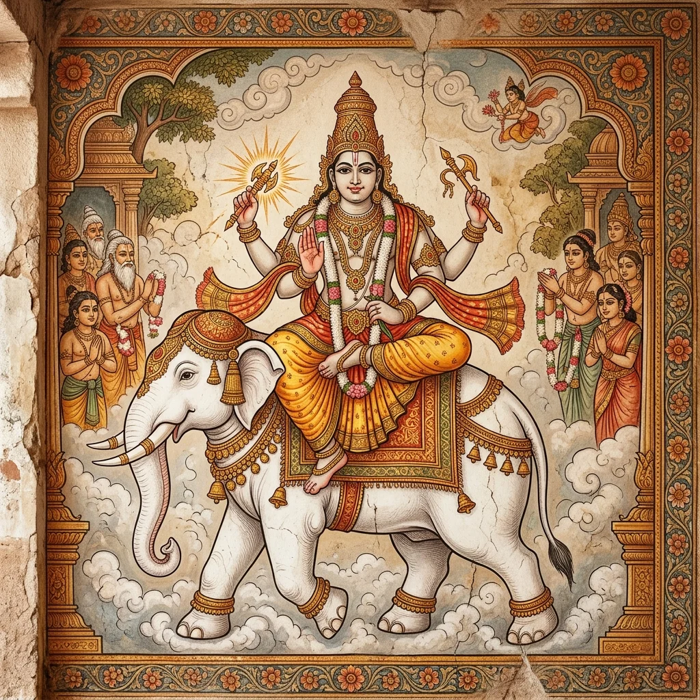

തൈത്തിരീയ ബ്രാഹ്മണേ തൃതീയാഷ്ടകേ അഷ്ടമഃ പ്രപാഠകഃ (അശ്വമേധം - വൈശ്വദേവം)

3.8. തൈത്തിരീയ ബ്രാഹ്മണേ തൃതീയാഷ്ടകേ അഷ്ടമ: പ്രപാഠക: (അശ്വമേധബ്രാഹ്മണം വൈശ്വദേവം കാണ്ഡം)
T.B.3.8.1.1
സാ॒ങ്ഗ്ര॒ഹ॒ണ്യേഷ്ട്യാ॑ യജതേ । ഇ॒മാം ജ॒നതാ॒ꣳ॒ സ॒ങ്ഗ॑ഹ്ണാ॒നീതി॑ ॥ ദ്വാദ॑ശാരത്നീ രശ॒നാ ഭ॑വതി । ദ്വാദ॑ശ॒ മാസാഃ᳚ സം ഁവഥ്സ॒രഃ । സ॒ം ഁവ॒ഥ്സ॒ര-മേ॒വാവ॑രുന്ധേ । മൌ॒ഞ്ജീ ഭ॑വതി । ഊർഗ്വൈ മുഞ്ജാഃ᳚ । ഊർജ॑-മേ॒വാവ॑രുന്ധേ ॥ ചി॒ത്രാ നക്ഷ॑ത്രം ഭവതി । ചി॒ത്രം ഁവാ ഏ॒തത്കർമ॑ । 1 (10)
T.B.3.8.1.2
യദ॑ശ്വമേ॒ധഃ സമൃ॑ദ്ധ്യൈ ॥ പുണ്യ॑നാമ ദേവ॒യജ॑ന-മ॒ദ്ധ്യവ॑സ്യതി । പുണ്യാ॑മേ॒വ തേന॑ കീ॒ർതി-മ॒ഭിജ॑യതി ॥ അപ॑ദാതീ-നൃ॒ത്വിജഃ॑ സ॒മാവ॑ഹ॒ന്ത്യാ സു॑ബ്രഹ്മ॒ണ്യായാഃ᳚ । സു॒വ॒ർഗസ്യ॑ ലോ॒കസ്യ॒ സമ॑ഷ്ട്യൈ ॥ കേ॒ശ॒ശ്മ॒ശ്രു വ॑പതേ । ന॒ഖാനി॒ നികൃ॑ന്തതേ । ദ॒തോ ധാ॑വതേ । സ്നാതി॑ । അഹ॑തം॒ ഁവാസഃ॒ പരി॑ധത്തേ ( ) । പാ॒പ്മനോഽപ॑ഹത്യൈ । വാചം॑ ഁയ॒ത്വോപ॑വസതി । സു॒വ॒ർഗസ്യ॑ ലോ॒കസ്യ॒ ഗുപ്ത്യൈ᳚ । രാത്രിം॑ ജാഗ॒രയ॑ന്ത ആസതേ । സു॒വ॒ർഗസ്യ॑ ലോ॒കസ്യ॒ സമ॑ഷ്ട്യൈ ॥ 2 (15)
T.B.3.8.2.1
ചതു॑ഷ്ടയ്യ॒ ആപോ॑ ഭവന്തി । ചതു॑ശ്ശഫോ॒ വാ അശ്വഃ॑ പ്രാജാപ॒ത്യഃ സമൃ॑ദ്ധ്യൈ ॥ താ ദി॒ഗ്ഭ്യഃ സ॒മാഭൃ॑താ ഭവന്തി । ദി॒ക്ഷു വാ ആപഃ॑ । അന്നം॒ ഁവാ ആപഃ॑ । അ॒ദ്ഭ്യോ വാ അന്നം॑ ജായതേ । യദേ॒വാദ്ഭ്യോഽന്നം॒ ജായ॑തേ । തദവ॑രുന്ധേ ॥ താസു॑ ബ്രഹ്മൌദ॒നം പ॑ചതി । രേത॑ ഏ॒വ തദ്ദ॑ധാതി ॥ 3 (10)
T.B.3.8.2.2
ചതു॑ശ്ശരാവോ ഭവതി । ദി॒ക്ഷ്വേ॑വ പ്രതി॑തിഷ്ഠതി ॥ ഉ॒ഭ॒യതോ॑ രു॒ക്മൌ ഭ॑വതഃ । ഉ॒ഭ॒യത॑ ഏ॒വാസ്മി॒ൻ-രുചം॑ ദധാതി । ഉദ്ധ॑രതി ശൃത॒ത്വായ॑ । സ॒ർപിഷ്വാ᳚ൻ ഭവതി മേദ്ധ്യ॒ത്വായ॑ । ച॒ത്വാര॑ ആർ.ഷേ॒യാഃ പ്രാഞ॑ന്തി । ദി॒ശാമേ॒വ ജ്യോതി॑ഷി ജുഹോതി । ച॒ത്വാരി॒ ഹിര॑ണ്യാനി ദദാതി । ദി॒ശാമ॒വ ജ്യോതീ॒ꣴ॒ഷ്യവ॑രുന്ധേ ॥ 4 (10)
T.B.3.8.2.3
യദാജ്യ॑-മു॒ച്ഛിഷ്യ॑തേ । തസ്മി॑ൻ-രശ॒നാം ന്യു॑നത്തി । പ്ര॒ജാപ॑തി॒ർവാ ഓ॑ദ॒നഃ । രേത॒ ആജ്യ᳚ം । യദാജ്യേ॑ രശ॒നാം ന്യു॒നത്തി॑ । പ്ര॒ജാപ॑തിമേ॒വ രേത॑സാ॒ സമ॑ർദ്ധയതി ॥ ദ॒ർഭ॒മയീ॑ രശ॒നാ ഭ॑വതി । ബ॒ഹു വാ ഏ॒ഷ കു॑ച॒രോ॑-ഽമേ॒ദ്ധ്യമുപ॑ഗച്ഛതി । യദശ്വഃ॑ । പ॒വിത്രം॒ ഁവൈ ദ॒ർഭാഃ । 5 (10)
T.B.3.8.2.4
യദ്ദ॑ർഭ॒മയീ॑ രശ॒നാ ഭവ॑തി । പു॒നാത്യേ॒വൈന᳚ം । പൂ॒തമേ॑നം॒ മേദ്ധ്യ॒-മാല॑ഭതേ ॥ അശ്വ॑സ്യ॒ വാ ആല॑ബ്ധസ്യ മഹി॒മോദ॑-ക്രാമത് । സ മ॒ഹർത്വി॑ജഃ॒ പ്രാവി॑ശത് । തന്മ॒ഹർത്വി॑ജാം മഹർത്വി॒ക്ത്വം । യന്മ॒ഹർത്വി॑ജഃ പ്രാ॒ഞന്തി॑ । മ॒ഹി॒മാന॑-മേ॒വാസ്മി॒ൻ-തദ്ദ॑ധതി ॥ അശ്വ॑സ്യ॒ വാ ആല॑ബ്ധസ്യ॒ രേത॒ ഉദ॑ക്രാമത് । തഥ്സു॒വർണ॒ꣳ॒ ഹിര॑ണ്യ-മഭവത് ( ) । യഥ്സു॒വർണ॒ꣳ॒ ഹിര॑ണ്യം॒ ദദാ॑തി । രേത॑ ഏ॒വ തദ്ദ॑ധാതി ॥ ഓ॒ദ॒നേ ദ॑ദാതി । രേതോ॒ വാ ഓ॑ദ॒നഃ । രേതോ॒ ഹിര॑ണ്യം । രേത॑സൈ॒വാസ്മി॒ൻ രേതോ॑ ദധാതി ॥ 6 (16)
T.B.3.8.3.1
യോ വൈ ബ്രഹ്മ॑ണേ ദേ॒വേഭ്യഃ॑ പ്ര॒ജാപ॑ത॒യേ-ഽപ്ര॑തി-പ്രോ॒ച്യാശ്വം॒ മേദ്ധ്യം॑ ബ॒ദ്ധ്നാതി॑ । ആ ദേ॒വതാ᳚ഭ്യോ വൃശ്ച്യതേ । പാപീ॑യാന്ഭവതി । യഃ പ്ര॑തി॒പ്രോച്യ॑ । ന ദേ॒വതാ᳚ഭ്യ॒ ആവൃ॑ശ്ച്യതേ । വസീ॑യാന്ഭവതി ॥ യദാഹ॑ । ബ്രഹ്മ॒ന്നശ്വം॒ മേദ്ധ്യം॑ ഭന്ഥ്സ്യാമി ദേ॒വേഭ്യഃ॑ പ്ര॒ജാപ॑തയേ॒ തേന॑ രാദ്ധ്യാസ॒മിതി॑ । ബ്രഹ്മ॒ വൈ ബ്ര॒ഹ്മാ । ബ്രഹ്മ॑ണ ഏ॒വ ദേ॒വേഭ്യഃ॑ പ്ര॒ജാപ॑തയേ പ്രതി॒പ്രോച്യാശ്വം॒ മേദ്ധ്യം॑ ബദ്ധ്നാതി । 7 (10)
T.B.3.8.3.2
ന ദേ॒വതാ᳚ഭ്യ॒ ആവൃ॑ശ്ച്യതേ । വസീ॑യാൻ ഭവതി ॥ ദേ॒വസ്യ॑ ത്വാ സവി॒തുഃ പ്ര॑സ॒വ ഇതി॑ രശ॒നാ-മാദ॑ത്തേ॒ പ്രസൂ᳚ത്യൈ । അ॒ശ്വിനോ᳚ർബാ॒ഹുഭ്യാ॒-മിത്യാ॑ഹ । അ॒ശ്വിനൌ॒ ഹി ദേ॒വാനാ॑-മദ്ധ്വ॒ര്യൂ ആസ്താ᳚ം । പൂ॒ഷ്ണോ ഹസ്താ᳚ഭ്യാ॒-മിത്യാ॑ഹ॒ യത്യൈ᳚ ॥ വ്യൃ॑ദ്ധം॒ ഁവാ ഏ॒തദ്യ॒ജ്ഞസ്യ॑ । യദ॑യ॒ജുഷ്കേ॑ണ ക്രി॒യതേ᳚ । ഇ॒മാമ॑ഗൃഭ്ണൻ-രശ॒നാ-മൃ॒തസ്യേ-ത്യധി॑ വദതി॒ യജു॑ഷ്കൃത്യൈ । യ॒ജ്ഞസ്യ॒ സമൃ॑ദ്ധ്യൈ ॥ 8 (10)
T.B.3.8.3.3
തദാ॑ഹുഃ । ദ്വാദ॑ശാരത്നീ രശ॒നാ ക॑ർത॒വ്യാ(3) ത്രയോ॑ദശാര॒ത്നീ(3)രിതി॑ । ഋ॒ഷ॒ഭോ വാ ഏ॒ഷ ഋ॑തൂ॒നാം । യഥ്സ॑ം ഁവഥ്സ॒രഃ । തസ്യ॑ ത്രയോദ॒ശോ മാസോ॑ വി॒ഷ്ടപ᳚ം । ഋ॒ഷ॒ഭ ഏ॒ഷ യ॒ജ്ഞാനാ᳚ം । യദ॑ശ്വമേ॒ധഃ । യഥാ॒ വാ ഋ॑ഷ॒ഭസ്യ॑ വി॒ഷ്ടപ᳚ം । ഏ॒വമേ॒തസ്യ॑ വി॒ഷ്ടപ᳚ം । ത്ര॒യോ॒ദ॒ശമ॑ര॒ത്നിꣳ ര॑ശ॒നായാ॑-മു॒പാദ॑ധാതി । 9 (10)
T.B.3.8.3.4
യഥ॑ർ.ഷ॒ഭസ്യ॑ വി॒ഷ്ടപꣳ॑ സꣴസ്ക॒രോതി॑ । താ॒ദൃഗേ॒വ തത് ॥ പൂർവ॒ ആയു॑ഷി വി॒ദഥേ॑ഷു ക॒വ്യേത്യാ॑ഹ । ആയു॑രേ॒വാസ്മി॑ൻ ദധാതി ॥ തയാ॑ ദേ॒വാഃ സു॒തമാബ॑ഭൂവു॒-രിത്യാ॑ഹ । ഭൂതി॑-മേ॒വോപാവ॑ർതതേ ॥ ഋ॒തസ്യ॒ സാമന᳚ഥ് സ॒രമാ॒രപ॒ന്തീത്യാ॑ഹ । സ॒ത്യം ഁവാ ഋ॒തം । സ॒ത്യേനൈ॒വൈന॑ മൃ॒തേനാര॑ഭതേ ॥ അ॒ഭി॒ധാ അ॒സീത്യാ॑ഹ । 10 (10)
T.B.3.8.3.5
തസ്മാ॑-ദശ്വമേധയാ॒ജീ സർവാ॑ണി ഭൂ॒താന്യ॒ഭി ഭ॑വതി । ഭുവ॑ന-മ॒സീത്യാ॑ഹ । ഭൂ॒മാന॑-മേ॒വോപ॑തി । യ॒ന്താ-ഽസീത്യാ॑ഹ । യ॒ന്താര॑-മേ॒വൈനം॑ കരോതി । ധ॒ർതാഽസീത്യാ॑ഹ । ധ॒ർതാര॑-മേ॒വൈനം॑ കരോതി । സോ᳚ഽഗ്നിം ഁവൈ᳚ശ്വാന॒ര-മിത്യാ॑ഹ । അ॒ഗ്നാ-വേ॒വൈനം॑ ഁവൈശ്വാന॒രേ ജു॑ഹോതി । സപ്ര॑ഥസ॒-മിത്യാ॑ഹ । 11 (10)
T.B.3.8.3.6
പ്ര॒ജയൈ॒വൈനം॑ പ॒ശുഭിഃ॑ പ്രഥയതി । സ്വാഹാ॑കൃത॒ ഇത്യാ॑ഹ । ഹോമ॑ ഏ॒വാസ്യ॒ഷഃ । പൃ॒ഥി॒വ്യാ-മിത്യാ॑ഹ । അ॒സ്യാമേ॒വൈനം॒ പ്രതി॑ഷ്ഠാപയതി । യ॒ന്താ രാഡ്യ॒ന്താഽസി॒ യമ॑നോ ധ॒ർതാഽസി॑ ധ॒രുണ॒ ഇത്യാ॑ഹ । രൂ॒പമേ॒വാസ്യൈ॒-തന്മ॑ഹി॒മാനം॒ ഁവ്യാച॑ഷ്ടേ । കൃ॒ഷ്യൈ ത്വാ॒ ക്ഷേമാ॑യ ത്വാ ര॒യ്യൈ ത്വാ॒ പോഷാ॑യ॒ ത്വേത്യാ॑ഹ । ആ॒ശിഷ॑-മേ॒വൈതാ-മാശാ᳚സ്തേ ॥ സ്വ॒ഗാ ത്വാ॑ ദേ॒വേഭ്യ॒ ഇത്യാ॑ഹ ( ) । ദേ॒വേഭ്യ॑ ഏ॒വൈനꣴ॑ സ്വ॒ഗാ ക॑രോതി । സ്വാഹാ᳚ ത്വാ പ്ര॒ജാപ॑തയ॒ ഇത്യാ॑ഹ । പ്രാ॒ജാ॒പ॒ത്യോ വാ അശ്വഃ॑ । യസ്യാ॑ ഏ॒വ ദേ॒വതാ॑യാ ആല॒ഭ്യത᳚ । തയൈ॒വൈന॒ꣳ॒ സമ॑ർദ്ധയതി ॥ 12 (15)
T.B.3.8.4.1
യഃ പി॒തുര॑നു॒ജായാഃ᳚ പു॒ത്രഃ । സ പു॒രസ്താ᳚ന്നയതി । യോ മാ॒തുര॑നു॒ജായാഃ᳚ പു॒ത്രഃ । സ പ॒ശ്ചാന്ന॑യതി । വിഷ്വ॑ഞ്ചമേ॒വാസ്മാ᳚ത്-പാ॒പ്മാനം॒ ഁവിവൃ॑ഹതഃ ॥ യോ അർവ॑ന്തം॒ ജിഘാꣳ॑സതി॒ തമ॒ഭ്യ॑മീതി॒ വരു॑ണ॒ ഇതി॒ ശ്വാനം॑ ചതുര॒ക്ഷം പ്രസൌ॑തി । പ॒രോ മർതഃ॑ പ॒രഃശ്വേതി॒ ശുന॑ശ്ചതുര॒ക്ഷസ്യ॒ പ്രഹ॑ന്തി । ശ്വേവ॒ വൈ പാ॒പ്മാ ഭ്രാതൃ॑വ്യഃ । പാ॒പ്മാന॑-മേ॒വാസ്യ॒ ഭ്രാതൃ॑വ്യꣳ ഹന്തി ॥ സൈ॒ദ്ധ്ര॒കം മുസ॑ലം ഭവതി । 13 (10)
T.B.3.8.4.2
കർമ॑കർമൈ॒വാസ്മൈ॑ സാധയതി ॥ പൌ॒ꣴ॒ശ്ച॒ലേ॒യോ ഹ॑ന്തി । പു॒ꣴ॒ശ്ച॒ല്വാം ഁവൈ ദേ॒വാഃ ശുചം॒ ന്യ॑ദധുഃ । ശു॒ചൈവാസ്യ॒ ശുചꣳ॑ ഹന്തി ॥ പാ॒പ്മാ വാ ഏ॒ത-മീ᳚ഫ്സ॒-തീത്യാ॑ഹുഃ । യോ᳚ഽശ്വമേ॒ധേന॒ യജ॑ത॒ ഇതി॑ । അശ്വ॑സ്യാധസ്പ॒ദ-മുപാ᳚സ്യതി । വ॒ജ്രീ വാ അശ്വഃ॑ പ്രാജാപ॒ത്യഃ । വജ്രേ॑ണൈ॒വ പാ॒പ്മാനം॒ ഭ്രാതൃ॑വ്യ॒-മവ॑ക്രാമതി ॥ ദ॒ക്ഷി॒ണാ-ഽപ॑പ്ലാവയതി । 14 (10)
T.B.3.8.4.3
പാ॒പ്മാന॑-മേ॒വാസ്മാ॒-ച്ഛമ॑ല॒-മപ॑പ്ലാവയതി ॥ ഐ॒ഷീ॒ക ഉ॑ദൂ॒ഹോ ഭ॑വതി । ആയു॒ർവാ ഇ॒ഷീകാഃ᳚ । ആയു॑രേ॒-വാസ്മി॑ൻ ദധതി । അ॒മൃതം॒ ഁവാ ഇ॒ഷീകാഃ᳚ । അ॒മൃത॑മേ॒-വാസ്മി॑ൻ ദധതി ॥ വേ॒ത॒സ॒ശാ॒ഖോപ॒സംബ॑ദ്ധാ ഭവതി । അ॒ഫ്സു-യോ॑നി॒ർവാ അശ്വഃ॑ । അ॒ഫ്സു॒ജോ വേ॑ത॒സഃ । സ്വാദേ॒വൈനം॒ ഁയോനേ॒ർനിർമി॑മീതേ ( ) ॥ പു॒രസ്താ᳚ത്-പ്ര॒ത്യഞ്ച॑-മ॒ഭ്യുദൂ॑ഹതി । പു॒രസ്താ॑-ദേ॒വാസ്മി॑ൻ പ്ര॒തീച്യ॒ മൃതം॑ ദധാതി ॥ അ॒ഹം ച॒ ത്വം ച॑ വൃത്രഹ॒ന്നിതി॑ ബ്ര॒ഹ്മാ യജ॑മാനസ്യ॒ ഹസ്തം॑ ഗൃഹ്ണാതി । ബ്ര॒ഹ്മ॒ക്ഷ॒ത്രേ ഏ॒വ സന്ദ॑ധാതി । അ॒ഭി ക്രത്വേ᳚ന്ദ്ര ഭൂ॒രധ॒ ജ്മന്നിത്യ॑-ധ്വ॒ര്യു-ര്യജ॑മാനം ഁവാചയ-ത്യ॒ഭിജി॑ത്യൈ ॥ 15 (15)
T.B.3.8.5.1
ച॒ത്വാര॑ ഋ॒ത്വിജഃ॒ സമു॑ക്ഷന്തി । ആ॒ഭ്യ ഏ॒വൈനം॑ ചത॒സൃഭ്യോ॑ ദി॒ഗ്ഭ്യോ॑-ഽഭിസമീ॑രയന്തി ॥ ശ॒തേന॑ രാജപു॒ത്രൈഃ സ॒ഹാദ്ധ്വ॒ര്യുഃ । പു॒രസ്താ᳚ത്-പ്ര॒ത്യങ്തിഷ്ഠ॒ൻ പ്രോക്ഷ॑തി । അ॒നേനാശ്വേ॑ന॒ മേദ്ധ്യേ॑നേ॒ഷ്ട്വാ । അ॒യꣳ രാജാ॑ വൃ॒ത്രം ഁവ॑ദ്ധ്യാ॒ദിതി॑ । രാ॒ജ്യം ഁവാ അ॑ദ്ധ്വ॒ര്യുഃ ।
ക്ഷ॒ത്രꣳ രാ॑ജപു॒ത്രഃ । രാ॒ജ്യേനൈ॒-വാസ്മി॑ൻ ക്ഷ॒ത്രം ദ॑ധാതി ॥ ശ॒തേനാ॑രാ॒ജഭി॑-രു॒ഗ്രൈഃ സ॒ഹ ബ്ര॒ഹ്മാ । 16 (10)
T.B.3.8.5.2
ദ॒ക്ഷി॒ണ॒ത ഉദ॒ങ്തിഷ്ഠ॒ൻ പ്രോക്ഷ॑തി । അ॒നേനാശ്വേ॑ന॒ മേദ്ധ്യേ॑നേ॒ഷ്ട്വാ । അ॒യꣳ രാജാ᳚-ഽപ്രതിധൃ॒ഷ്യോ᳚-ഽസ്ത്വിതി॑ । ബലം॒ ഁവൈ ബ്ര॒ഹ്മാ । ബല॑-മരാ॒ജോഗ്രഃ । ബല॑നൈ॒-വാസ്മി॒ൻ ബലം॑ ദധാതി ॥ ശ॒തേന॑ സൂതഗ്രാമ॒ണിഭിഃ॑ സ॒ഹ ഹോതാ᳚ । പ॒ശ്ചാത്-പ്രാങ്തിഷ്ഠ॒ൻ പ്രോക്ഷ॑തി । അ॒നേനാശ്വേ॑ന॒ മേദ്ധ്യേ॑നേ॒ഷ്ട്വാ । അ॒യꣳ രാജാ॒ഽസ്യൈ വി॒ശഃ । 17 (10)
T.B.3.8.5.3
ബ॒ഹു॒ഗ്വൈ ബ॑ഹ്വ॒ശ്വായൈ॑ ബഹ്വജാവി॒കായൈ᳚ । ബ॒ഹു॒വ്രീ॒ഹി॒യ॒വായൈ॑ ബഹുമാഷതി॒ലായൈ᳚ । ബ॒ഹു॒ഹി॒ര॒ണ്യായൈ॑ ബഹുഹ॒സ്തികാ॑യൈ । ബ॒ഹു॒ദാ॒സ॒പൂ॒രു॒ഷായൈ॑ രയി॒മത്യൈ॒ പുഷ്ടി॑മത്യൈ । ബ॒ഹു॒രാ॒യ॒സ്പോ॒ഷായൈ॒ രാജാ॒ഽസ്ത്വിതി॑ । ഭൂ॒മാ വൈ ഹോതാ᳚ । ഭൂ॒മാ സൂ॑തഗ്രാമ॒ണ്യഃ॑ । ഭൂ॒മ്നൈവാസ്മി॑ൻ ഭൂ॒മാനം॑ ദധാതി ॥ ശ॒തേന॑ ക്ഷത്തസങ്ഗ്രഹീ॒തൃഭിഃ॑ സ॒ഹോദ്ഗാ॒താ । ഉ॒ത്ത॒ര॒തോ ദ॑ക്ഷി॒ണാ തിഷ്ഠ॒ൻ പ്രോക്ഷ॑തി । 18 (10)
T.B.3.8.5.4
അ॒നേനാശ്വേ॑ന॒ മേദ്ധ്യേ॑ നേ॒ഷ്ട്വാ । അ॒യꣳ രാജാ॒ സർവ॒മായു॑രേ॒ത്വിതി॑ । ആയു॒ർവാ ഉ॑ദ്ഗാ॒താ । ആയുഃ॑ ക്ഷത്തസങ്ഗ്രഹീ॒താരഃ॑ । ആയു॑ഷൈ॒-വാസ്മി॒ന്നായു॑-ർദധാതി ॥ ശ॒തꣳശ॑തം ഭവന്തി । ശ॒തായുഃ॒ പുരു॑ഷഃ ശ॒തേന്ദ്രി॑യഃ । ആയു॑ഷ്യേ॒വേന്ദ്രി॒യേ പ്രതി॑തിഷ്ഠതി ॥ ച॒തു॒ശ്ശ॒താ ഭ॑വന്തി । ചത॑സ്രോ॒ ദിശഃ॑ ( ) । ദി॒ക്ഷ്വേ॑വ പ്രതി॑തിഷ്ഠതി ॥ 19 (11)
T.B.3.8.6.1
യഥാ॒ വൈ ഹ॒വിഷോ॑ ഗൃഹീ॒തസ്യ॒ സ്കന്ദ॑തി । ഏ॒വം ഁവാ ഏ॒തദശ്വ॑സ്യ സ്കന്ദതി । യന്നി॒ക്ത-മനാ॑ലബ്ധ-മുഥ്സൃ॒ജന്തി॑ । യഥ്സ്തോക്യാ॑ അ॒ന്വാഹ॑ । സ॒ർവ॒ഹുത॑-മേ॒വൈനം॑ കരോ॒ത്യസ്ക॑ന്ദായ । അസ്ക॑ന്ന॒ꣳ॒ ഹി തത് । യദ്ധു॒തസ്യ॒ സ്കന്ദ॑തി ॥ സ॒ഹസ്ര॒-മന്വാ॑ഹ । സ॒ഹസ്ര॑ സംമിതഃ സുവ॒ർഗോ ലോ॒കഃ । സു॒വ॒ർഗസ്യ॑ ലോ॒കസ്യാ॒-ഭിജി॑ത്യൈ ॥ 20 (10)
T.B.3.8.6.2
യത്പരി॑മിതാ അനുബ്രൂ॒യാത് । പരി॑മിത॒മവ॑രുന്ധീത । അപ॑രിമിതാ॒ അന്വാ॑ഹ । അപ॑രിമിതഃ സുവ॒ർഗോ ലോ॒കഃ । സു॒വ॒ർഗസ്യ॑ ലോ॒കസ്യ॒ സമ॑ഷ്ട്യൈ ॥ സ്തോക്യാ॑ ജുഹോതി । യാ ഏ॒വ വർഷ്യാ॒ ആപഃ॑ । താ അവ॑രുന്ധേ ॥ അ॒സ്യാം ജു॑ഹോതി । ഇ॒യം ഁവാ അ॒ഗ്നിർവൈ᳚ശ്വാന॒രഃ । 21 (10)
T.B.3.8.6.3
അ॒സ്യാമേ॒വൈനാഃ॒ പ്രതി॑ഷ്ഠാപയതി ॥ ഉ॒വാച॑ ഹ പ്ര॒ജാപ॑തിഃ । സ്തോക്യാ॑സു॒ വാ അ॒ഹമ॑ശ്വമേ॒ധꣳ സꣴസ്ഥാ॑പയാമി । തേന॒ തതഃ॒ സꣴസ്ഥി॑തേന ചരാ॒മീതി॑ ॥ അ॒ഗ്നയേ॒ സ്വാഹേത്യാ॑ഹ । അ॒ഗ്നയ॑ ഏ॒വൈനം॑ ജുഹോതി ॥ സോമാ॑യ॒ സ്വാഹേത്യാ॑ഹ । സോമാ॑യൈ॒വൈനം॑ ജുഹോതി । സ॒വി॒ത്രേ സ്വാഹേത്യാ॑ഹ । സ॒വി॒ത്ര ഏ॒വൈനം॑ ജുഹോതി । 22 (10)
T.B.3.8.6.4
സര॑സ്വത്യൈ॒ സ്വാഹേത്യാ॑ഹ । സര॑സ്വത്യാ ഏ॒വൈനം॑ ജുഹോതി । പൂ॒ഷ്ണേ സ്വാഹേത്യാ॑ഹ । പൂ॒ഷ്ണ ഏ॒വൈനം॑ ജുഹോതി । ബൃഹ॒സ്പത॑യേ॒ സ്വാഹേത്യാ॑ഹ । ബൃഹ॒സ്പത॑യ ഏ॒വൈനം॑ ജുഹോതി । അ॒പാം മോദാ॑യ॒ സ്വാഹേത്യാ॑ഹ । അ॒ദ്ഭ്യ ഏ॒വൈനം॑ ജുഹോതി । വാ॒യവേ॒ സ്വാഹേത്യാ॑ഹ । വാ॒യവ॑ ഏ॒വൈനം॑ ജുഹോതി । 23 (10)
T.B.3.8.6.5
മി॒ത്രായ॒ സ്വാഹേത്യാ॑ഹ । മി॒ത്രായൈ॒വൈനം॑ ജുഹോതി । വരു॑ണായ॒ സ്വാഹേത്യാ॑ഹ । വരു॑ണായൈ॒വൈനം॑ ജുഹോതി ॥ ഏ॒താഭ്യ॑ ഏ॒വൈനം॑ ദേ॒വതാ᳚ഭ്യോ ജുഹോതി ॥ ദശ॑ദശ സ॒പാംദം॑ ജുഹോതി । ദശാ᳚ക്ഷരാ വി॒രാട് । അന്നം॑ ഁവി॒രാട് । വി॒രാജൈ॒വാന്നാദ്യ॒-മവ॑രുന്ധേ ॥ പ്ര വാ ഏ॒ഷോ᳚-ഽസ്മാല്ലോ॒കാ-ച്ച്യ॑വതേ ( ) । യഃ പരാ॑ചീ॒രാഹു॑തീർജു॒ഹോതി॑ । പുനഃ॑പുന-രഭ്യാ॒വർതം॑ ജുഹോതി । അ॒സ്മിന്നേ॒വ ലോ॒കേ പ്രതി॑തിഷ്ഠതി ॥ ഏ॒താꣳ ഹ॒ വാവ സോ᳚ഽശ്വമേ॒ധസ്യ॒ സꣴസ്ഥി॑തി മുവാ॒ചാസ്ക॑ന്ദായ । അസ്ക॑ന്ന॒ꣳ॒ ഹി തത് । യദ്യ॒ജ്ഞസ്യ॒ സꣴസ്ഥി॑തസ്യ॒ സ്കന്ദ॑തി ॥ 24 (16)
T.B.3.8.7.1
പ്ര॒ജാപ॑തയേ ത്വാ॒ ജുഷ്ടം॒ പ്രോക്ഷാ॒മീതി॑ പ॒॒॒രസ്താ᳚ത്-പ॒ത്യങ്തിഷ്ഠ॒ൻ പ്രോക്ഷ॑തി । പ്ര॒ജാപ॑തി॒ർവൈ ദേ॒വാനാ॑-മന്നാ॒ദോ വീ॒ര്യാ॑വാൻ । അ॒ന്നാദ്യ॑-മേ॒വാസ്മി॑ൻ വീ॒ര്യം॑ ദധാതി । തസ്മാ॒ദശ്വഃ॑ പശൂ॒നാ-മ॑ന്നാ॒ദോ വീ॒ര്യാ॑വത്തമഃ ॥ ഇ॒ന്ദ്രാ॒ഗ്നിഭ്യാം॒ ത്വേതി॑ ദക്ഷിണ॒തഃ । ഇ॒ന്ദ്രാ॒ഗ്നീ വൈ ദേ॒വാനാ॒മോജി॑ഷ്ഠൌ॒ ബലി॑ഷ്ഠൌ । ഓജ॑ ഏ॒വാസ്മി॒ൻ ബലം॑ ദധാതി । തസ്മാ॒ദശ്വഃ॑ പശൂ॒നാമോജി॑ഷ്ഠോ॒ ബലി॑ഷ്ഠഃ ॥ വാ॒യവേ॒ ത്വേതി॑ പ॒ശ്ചാത് । വാ॒യുർവൈ ദേ॒വാനാ॑മാ॒ശുഃ സാ॑രസാ॒രിത॑മഃ । 25 (10)
T.B.3.8.7.2
ജ॒വമേ॒വാസ്മി॑ന്ദധാതി । തസ്മാ॒ദശ്വഃ॑ പശൂ॒നാമാ॒ശുഃ സാ॑രസാ॒രിത॑മഃ ॥ വിശ്വേ᳚ഭ്യസ്ത്വാ ദേ॒വേഭ്യ॒ ഇത്യു॑ത്തര॒തഃ । വിശ്വേ॒ വൈ ദേ॒വാ ദേ॒വാനാം᳚ ഁയശ॒സ്വിത॑മാഃ । യശ॑ ഏ॒വാസ്മി॑ന്ദധാതി । തസ്മാ॒ദശ്വഃ॑ പശൂ॒നാം ഁയ॑ശ॒സ്വിത॑മഃ ॥ ദേ॒വേഭ്യ॒-സ്ത്വേത്യ॒ധസ്താ᳚ത് । ദേ॒വാ വൈ ദേ॒വാനാ॒-മപ॑ചിതതമാഃ । അപ॑ചിതി-മേ॒വാസ്മി॑-ന്ദധാതി । തസ്മാ॒ദശ്വഃ॑ പശൂ॒നാ-മപ॑ചിതതമഃ ॥ 26 (10)
T.B.3.8.7.3
സർവേ᳚ഭ്യസ്ത്വാ ദേ॒വേഭ്യ॒ ഇത്യു॒പരി॑ഷ്ടാത് । സർവേ॒ വൈ ദേ॒വാസ്ത്വിഷി॑മന്തോ ഹര॒സ്വിനഃ॑ । ത്വിഷി॑-മേ॒വാസ്മി॒ൻ॒.ഹരോ॑ ദധാതി । തസ്മാ॒ദശ്വഃ॑ പശൂ॒നാം ത്വിഷി॑മാൻ.ഹര॒സ്വിത॑മഃ ॥ ദി॒വേ ത്വാ॒ഽന്തരി॑ക്ഷായ ത്വാ പൃഥി॒വ്യൈ ത്വേത്യാ॑ഹ । ഏ॒ഭ്യ ഏ॒വൈനം॑ ഁലോ॒കേഭ്യഃ॒ പ്രോക്ഷ॑തി ॥ സ॒തേ ത്വാഽസ॑തേ ത്വാ॒-ഽദ്ഭ്യസ്ത്വൌഷ॑ധീഭ്യസ്ത്വാ॒ വിശ്വേ᳚ഭ്യസ്ത്വാ ഭൂ॒തേഭ്യ॒ ഇത്യാ॑ഹ । തസ്മാ॑ദശ്വമേധയാ॒ജിന॒ꣳ॒ സർവാ॑ണി ഭൂ॒താന്യുപ॑ ജീവന്തി ॥ ബ്ര॒ഹ്മ॒വാ॒ദിനോ॑ വദന്തി । യത്പ്രാ॑ജാപ॒ത്യോഽശ്വഃ॑ ( ) । അഥ॒ കസ്മാ॑-ദേന-മ॒ന്യാഭ്യോ॑ ദേ॒വതാ॒ഭ്യോഽപി॒ പ്രോക്ഷ॒തീതി॑ । അശ്വേ॒ വൈ സർവാ॑ ദേ॒വതാ॑ അ॒ന്വായ॑ത്താഃ । തം ഁയദ്വിശ്വേ᳚ഭ്യസ്ത്വാ ഭൂ॒തേഭ്യ॒ ഇതി॑ പ്രാ॒ക്ഷതി॑ । ദേ॒വതാ॑ ഏ॒വാസ്മി॑ൻ-ന॒ന്വായാ॑തയതി । തസ്മാ॒ദശ്വേ॒ സർവാ॑ ദേ॒വതാ॑ അ॒ന്വായ॑ത്താഃ ॥ 27 (15)
T.B.3.8.8.1
യഥാ॒ വൈ ഹ॒വിഷോ॑ ഗൃഹീ॒തസ്യ॒ സ്കന്ദ॑തി । ഏ॒വം ഁവാ ഏ॒തദശ്വ॑സ്യ സ്കന്ദതി । യത്പ്രോക്ഷി॑ത॒-മനാ॑ലബ്ധ-മുഥ്സൃ॒ജന്തി॑ । യദ॑ശ്വ-ചരി॒താനി॑ ജു॒ഹോതി॑ । സ॒ർവ॒ഹുത॑-മേ॒വൈനം॑ കരോ॒ത്യ-സ്ക॑ന്ദായ । അസ്ക॑ന്ന॒ꣳ॒ ഹി തത് । യദ്ധു॒തസ്യ॒ സ്കന്ദ॑തി ॥ ഈ॒ങ്കാ॒രായ॒ സ്വാഹേങ്കൃ॑തായ॒ സ്വാഹേത്യാ॑ഹ । ഏ॒താനി॒ വാ അ॑ശ്വചരി॒താനി॑ । ച॒രി॒തൈരേ॒വൈന॒ꣳ॒ സമ॑ർദ്ധയതി ॥ 28 (10)
T.B.3.8.8.2
തദാ॑ഹുഃ । അനാ॑ഹുതയോ॒ വാ അ॑ശ്വചരി॒താനി॑ । നൈതാ ഹോ॑ത॒വ്യാ॑ ഇതി॑ । അഥോ॒ ഖല്വാ॑ഹുഃ । ഹോ॒ത॒വ്യാ॑ ഏ॒വ । അത്ര॒ വാവൈവം ഁവി॒ദ്വാന॑ശ്വമേ॒ധꣳ സꣴസ്ഥാ॑പയതി । യദ॑ശ്വ-ചരി॒താനി॑ ജു॒ഹോതി॑ । തസ്മാ᳚-ദ്ധോത॒വ്യാ॑ ഇതി॑ ॥ ബ॒ഹി॒ർദ്ധാ വാ ഏ॑ന-മേ॒ത-ദാ॒യത॑നാദ്-ദധാതി । ഭ്രാതൃ॑വ്യമസ്മൈ ജനയതി । 29 (10)
T.B.3.8.8.3
യസ്യാ॑നായത॒നേ᳚-ഽന്യത്രാ॒ഗ്നേ-രാഹു॑തീർ ജു॒ഹോതി॑ । സാ॒വി॒ത്രി॒യാ ഇഷ്ട്യാഃ᳚ പു॒രസ്താ᳚ ഥ്സ്വിഷ്ട॒കൃതഃ॑ । ആ॒ഹ॒വ॒നീയേ᳚-ഽശ്വചരി॒താനി॑ ജുഹോതി । ആ॒യത॑ന ഏ॒വാസ്യാഹു॑തീർ ജുഹോതി । നാസ്മൈ॒ ഭ്രാതൃ॑വ്യം ജനയതി ॥ തദാ॑ഹുഃ । യ॒ജ്ഞ॒മു॒ഖേ യ॑ജ്ഞമുഖേ ഹോത॒വ്യാഃ᳚ । യ॒ജ്ഞസ്യ॒ ക്ലൃപ്ത്യൈ᳚ । സു॒വ॒ർഗസ്യ॑ ലോ॒കസ്യാ-നു॑ഖ്യാത്യാ॒ ഇതി॑ ॥ അഥോ॒ ഖല്വാ॑ഹുഃ । 30 (10)
T.B.3.8.8.4
യദ്യ॑ജ്ഞമു॒ഖേ യ॑ജ്ഞമുഖേ ജുഹു॒യാത് । പ॒ശുഭി॒-ര്യജ॑മാനം॒ ഁവ്യ॑ർദ്ധയേത് । അവ॑ സുവ॒ർഗാല്ലോ॒കാ-ത്പ॑ദ്യേത । പാപീ॑യാൻ ഥ്സ്യാ॒ദിതി॑ । സ॒കൃദേ॒വ ഹോ॑ത॒വ്യാഃ᳚ । ന യജ॑മാനം പ॒ശുഭി॒-ർവ്യ॑ർദ്ധയതി । അ॒ഭി സു॑വ॒ർഗം ഁലോ॒കം ജ॑യതി । ന പാപീ॑യാൻ ഭവതി ॥ അ॒ഷ്ടാച॑ത്വാരിꣳശത-മശ്വരൂ॒പാണി॑ ജുഹോതി । അ॒ഷ്ടാച॑ത്വാരിꣳശദക്ഷരാ॒ ജഗ॑തീ ( ) । ജാഗ॒തോഽശ്വഃ॑ പ്രാജാപ॒ത്യഃ സമൃ॑ദ്ധ്യൈ ॥ ഏക॒മതി॑രിക്തം ജുഹോതി । തസ്മാ॒ദേകഃ॑ പ്ര॒ജാസ്വർദ്ധു॑കഃ ॥ 31 (13)
T.B.3.8.9.1
വി॒ഭൂർമാ॒ത്രാ പ്ര॒ഭൂഃ പി॒ത്രേത്യാ॑ഹ । ഇ॒യം ഁവൈ മാ॒താ । അ॒സൌ പി॒താ । ആ॒ഭ്യാമേ॒വൈനം॒ പരി॑ദദാതി ॥ അശ്വോ॑ഽസി॒ ഹയോ॒ഽസീത്യാ॑ഹ । ശാസ്ത്യേ॒വൈന॑മേ॒തത് । തസ്മാ᳚ച്ഛി॒ഷ്ടാഃ പ്ര॒ജാ ജാ॑യന്തേ ॥ അത്യോ॒ഽസീത്യാ॑ഹ । തസ്മാ॒ദശ്വഃ॒ സർവാ᳚ൻ പ॒ശൂനത്യേ॑തി । തസ്മാ॒ദശ്വഃ॒ സർവേ॑ഷാം പശൂ॒നാꣴ ശ്രൈഷ്ഠ്യം॑ ഗച്ഛതി ॥ 32 (10)
T.B.3.8.9.2
പ്ര യശഃ॒ ശ്രൈഷ്ഠ്യ॑മാപ്നോതി । യ ഏ॒വം ഁവേദ॑ ॥ നരോ॒ഽസ്യർവാ॑ഽസി॒ സപ്തി॑രസി വാ॒ജ്യ॑സീത്യാ॑ഹ । രൂ॒പമേ॒വാസ്യൈ॒തൻ മ॑ഹി॒മാനം॒ ഁവ്യാച॑ഷ്ടേ ॥ യയു॒ർനാമാ॒-ഽസീത്യാ॑ഹ । ഏ॒തദ്വാ അശ്വ॑സ്യ പ്രി॒യം നാ॑മ॒ധേയ᳚ം । പ്രി॒യേണൈ॒വൈനം॑ നാമ॒ധേയേ॑നാ॒ഭിവ॑ദതി । തസ്മാ॒-ദപ്യാ॑മി॒ത്രൌ സ॒ങ്ഗത്യ॑ । നാമ്നാ॒ ചേദ്ധ്വയേ॑തേ । മി॒ത്രമേ॒വ ഭ॑വതഃ ॥ 33 (10)
T.B.3.8.9.3
ആ॒ദി॒ത്യാനാം॒ പത്വാന്വി॒ഹീത്യാ॑ഹ । ആ॒ദി॒ത്യാനേ॒വൈനം॑ ഗമയതി ॥ അ॒ഗ്നയേ॒ സ്വാഹാ॒ സ്വാഹേ᳚ന്ദ്രാ॒ഗ്നിഭ്യാ॒മിതി॑ പൂർവഹോ॒മാഞ്ജു॑ഹോതി । പൂവ॑ ഏ॒വ ദ്വി॒ഷന്തം॒ ഭ്രാതൃ॑വ്യ॒-മതി॑ക്രാമതി ॥ ഭൂര॑സി ഭു॒വേ ത്വാ॒ ഭവ്യാ॑യ ത്വാ ഭവിഷ്യ॒തേ ത്വേത്യുഥ്സൃ॑ജതി സർവ॒ത്വായ॑ ॥ ദേവാ॑ ആശാപാലാ ഏ॒തം ദേ॒വേഭ്യോഽശ്വം॒ മേധാ॑യ॒ പ്രോക്ഷി॑തം ഗോപായ॒തേത്യാ॑ഹ । ശ॒തം ഁവൈ തല്പ്യാ॑ രാജപു॒ത്രാ ദേ॒വാ ആ॑ശാപാ॒ലാഃ । തേഭ്യ॑ ഏ॒വൈനം॒ പരി॑ദദാതി ॥ ഈ॒ശ്വ॒രോ വാ അശ്വഃ॒ പ്രമു॑ക്തഃ॒ പരാം᳚ പരാ॒വതം॒ ഗന്തോഃ᳚ । ഇ॒ഹ ധൃതിഃ॒ സ്വാഹേ॒ഹ വിധൃ॑തിഃ॒ സ്വാഹേ॒ഹ രന്തിഃ॒ സ്വാഹേ॒ഹ രമ॑തിഃ॒ സ്വാഹേതി॑ ചതൃ॒ഷു പ॒ഥ്സു ജു॑ഹോതി । 34 (10)
T.B.3.8.9.4
ഏ॒താ വാ അശ്വ॑സ്യ॒ ബന്ധ॑നം । താഭി॑രേ॒വൈനം॑ ബദ്ധ്നാതി । തസ്മാ॒ദശ്വഃ॒ പ്രമു॑ക്തോ॒ ബന്ധ॑ന॒-മാഗ॑ച്ഛതി । തസ്മാ॒ദശ്വഃ॒ പ്രമു॑ക്തോ॒ ബന്ധ॑നം॒ ന ജ॑ഹാതി ॥ രാ॒ഷ്ട്രം ഁവാ അ॑ശ്വമേ॒ധഃ । രാ॒ഷ്ട്രേ ഖലു॒ വാ ഏ॒തേ വ്യായ॑ച്ഛന്തേ । യേഽശ്വം॒ മേദ്ധ്യ॒ꣳ॒ രക്ഷ॑ന്തി । തേഷാം॒ ഁയ ഉ॒ദൃചം॒ ഗച്ഛ॑ന്തി । രാ॒ഷ്ട്രാദേ॒വ തേ രാ॒ഷ്ട്രം ഗ॑ച്ഛന്തി । അഥ॒ യ ഉ॒ദൃചം॒ ന ഗച്ഛ॑ന്തി ( ) । 35 (10)
T.B.3.8.9.5
രാ॒ഷ്ട്രാദേ॒വ തേ വ്യവ॑ച്ഛിദ്യന്തേ । പരാ॒ വാ ഏ॒ഷ സി॑ച്യതേ । യോ॑-ഽബ॒ലോ᳚-ഽശ്വമേ॒ധേന॒ യജ॑തേ । യദ॒മിത്രാ॒ അശ്വം॑ ഁവി॒ന്ദേരൻ॑ । ഹ॒ന്യേതാ᳚സ്യ യ॒ജ്ഞഃ । ച॒തു॒ശ്ശ॒താ ര॑ക്ഷന്തി । യ॒ജ്ഞസ്യാഘാ॑തായ ॥ അഥാ॒ന്യ-മാ॒നീയ॒ പ്രോക്ഷേ॑യുഃ । സൈവ തതഃ॒ പ്രായ॑ശ്ചിത്തിഃ ॥ 36 (9)
T.B.3.8.10.1
പ്ര॒ജാപ॑തി-രകാമയതാശ്വമേ॒ധേന॑ യജേ॒യേതി॑ । സ തപോ॑ഽതപ്യത । തസ്യ॑ തേപാ॒നസ്യ॑ । സ॒പ്താത്മനോ॑ ദേ॒വതാ॒ ഉദ॑ക്രാമൻ । സാ ദീ॒ക്ഷാ-ഽഭ॑വത് । സ ഏ॒താനി॑ വൈശ്വദേ॒വാന്യ॑പശ്യത് । താന്യ॑ജുഹോത് । തൈർവൈ സ ദീ॒ക്ഷാമവാ॑രുന്ധ । യദ്വൈ᳚ശ്വ ദേ॒വാനി॑ ജു॒ഹോതി॑ । ദീ॒ക്ഷാമേ॒വ-തൈര്യജ॑മാ॒നോ-ഽവ॑രുന്ധേ ॥ 37 (10)
T.B.3.8.10.2
സ॒പ്ത ജു॑ഹോതി । സ॒പ്ത ഹി താ ദേ॒വതാ॑ ഉ॒ദക്രാ॑മൻ ॥ അ॒ന്വ॒ഹം ജു॑ഹോതി । അ॒ന്വ॒ഹമേ॒വ ദീ॒ക്ഷാമവ॑രുന്ധേ ॥ ത്രീണി॑ വൈശ്വദേ॒വാനി॑ ജുഹോതി । ച॒ത്വാര്യൌ᳚ദ്ഗ്രഹ॒ണാനി॑ । സ॒പ്ത സംപ॑ദ്യന്തേ । സ॒പ്ത വൈ ശീ॑ര.ഷ॒ണ്യാഃ᳚ പ്രാ॒ണാഃ । പ്രാ॒ണാ ദീ॒ക്ഷാ । പ്രാ॒ണൈരേ॒വ പ്രാ॒ണാന്ദീ॒ക്ഷാമവ॑രുന്ധേ ॥ 38 (10)
T.B.3.8.10.3
ഏക॑വിꣳശതിം ഁവൈശ്വദേ॒വാനി॑ ജുഹോതി । ഏക॑വിꣳശതി॒ർവൈ ദേ॑വലോ॒കാഃ । ദ്വാദ॑ശ॒ മാസാഃ॒ പഞ്ച॒ർതവഃ॑ । ത്രയ॑ ഇ॒മേ ലോ॒കാഃ । അ॒സാവാ॑ദി॒ത്യ ഏ॑കവി॒ꣳ॒ശഃ ॥ ഏ॒ഷ സു॑വ॒ർഗോ ലോ॒കഃ । തദ്ദൈവ്യം॑ ക്ഷ॒ത്ത്രം । സാ ശ്രീഃ । തദ്ബ്ര॒ദ്ധ്നസ്യ॑ വി॒ഷ്ടപ᳚ം । തഥ്സ്വാരാ᳚ജ്യ-മുച്യതേ ॥ 39 (10)
T.B.3.8.10.4
ത്രി॒ꣳ॒ശത॑-മൌദ്ഗ്രഹ॒ണാനി॑ ജുഹോതി । ത്രി॒ꣳ॒ശദ॑ക്ഷരാ വി॒രാട് । അന്നം॑ ഁവി॒രാട് । വി॒രാജൈ॒വാന്നാദ്യ॒മവ॑രുന്ധേ ॥ ത്രേ॒ധാ വി॒ഭജ്യ॑ ദേ॒വതാം᳚ ജുഹോതി । ത്ര്യാ॑വൃതോ॒ വൈ ദേ॒വാഃ । ത്ര്യാ॑വൃത ഇ॒മേ ലോ॒കാഃ । ഏ॒ഷാം ഁലോ॒കാനാ॒മാപ്ത്യൈ᳚ । ഏ॒ഷാം ഁലോ॒കാനാം॒ ക്ലൃപ്ത്യൈ᳚ ॥ അപ॒ വാ ഏ॒തസ്മാ᳚ത്പ്രാ॒ണാഃ ക്രാ॑മന്തി । 40 (10)
T.B.3.8.10.5
യോ ദീ॒ക്ഷാ-മ॑തിരേ॒ചയ॑തി । സ॒പ്താ॒ഹം പ്രച॑രന്തി । സ॒പ്ത വൈ ശീ॑ർ.ഷ॒ണ്യാഃ᳚ പ്രാ॒ണാഃ । പ്രാ॒ണാ ദീ॒ക്ഷാ । പ്രാ॒ണൈരേ॒വ പ്രാ॒ണാന്ദീ॒ക്ഷാമവ॑രുന്ധേ ॥ പൂ॒ർണാ॒ഹു॒തി-മു॑ത്ത॒മാം ജു॑ഹോതി । സർവം॒ ഁവൈ പൂ᳚ർണാഹു॒തിഃ । സർവ॑മേ॒വാപ്നോ॑തി । അഥോ॑ ഇ॒യം ഁവൈ പൂ᳚ർണാഹു॒തിഃ । അ॒സ്യാമേ॒വ പ്രതി॑തിഷ്ഠതി ( ) ॥ 41 (10)
T.B.3.8.11.1
പ॒ജാപ॑തി-രശ്വമേ॒ധ-മ॑സൃജത । തꣳ സൃ॒ഷ്ടം ന കിഞ്ച॒നോദ॑യച്ഛത് । തം ഁവൈ᳚ശ്വദേ॒വാ-ന്യേ॒വോദ॑യച്ഛൻ । യദ്വൈ᳚ശ്വദേ॒വാനി॑ ജു॒ഹോതി॑ । യ॒ജ്ഞസ്യോദ്യ॑ത്യൈ ॥ സ്വാഹാ॒ഽഽധി-മാധീ॑തായ॒ സ്വാഹാ᳚ । സ്വാഹാഽഽധീ॑തം॒ മന॑സേ॒ സ്വാഹാ᳚ । സ്വാഹാ॒ മനഃ॑ പ്ര॒ജാപ॑തയേ॒ സ്വാഹാ᳚ । കായ॒ സ്വാഹാ॒ കസ്മൈ॒ സ്വാഹാ॑ കത॒മസ്മൈ॒ സ്വാഹേതി॑ പ്രാജാപ॒ത്യേ മുഖ്യേ॑ ഭവതഃ । പ്ര॒ജാപ॑തിമുഖാഭി-രേ॒വൈനം॑ ദേ॒വതാ॑ഭി॒-രുദ്യ॑ച്ഛതേ ॥ 42 (10)
T.B.3.8.11.2
അദി॑ത്യൈ॒ സ്വാഹാഽദി॑ത്യൈ മ॒ഹ്യൈ᳚ സ്വാഹാഽദി॑ത്യൈ സുമൃഡീ॒കായൈ॒ സ്വാഹേത്യാ॑ഹ । ഇ॒യം ഁവാ അദി॑തിഃ । അ॒സ്യാ ഏ॒വൈനം॑ പ്രതി॒ഷ്ഠായോദ്യ॑ച്ഛതേ ॥ സര॑സ്വത്യൈ॒ സ്വാഹാ॒ സര॑സ്വത്യൈ ബൃഹ॒ത്യൈ᳚ സ്വാഹാ॒ സര॑സ്വത്യൈ പാവ॒കായൈ॒ സ്വാഹേത്യാ॑ഹ । വാഗ്വൈ സര॑സ്വതീ । വാ॒ചൈവൈന॒മുദ്യ॑ച്ഛതേ ॥ പൂ॒ഷ്ണേ സ്വാഹാ॑ പൂ॒ഷ്ണേ പ്ര॑പ॒ഥ്യാ॑യ॒ സ്വാഹാ॑ പൂ॒ഷ്ണേ ന॒രന്ധി॑ഷായ॒ സ്വാഹേത്യാ॑ഹ । പ॒ശവോ॒ വൈ പൂ॒ഷാ । പ॒ശുഭി॑-രേ॒വൈന॒-മുദ്യ॑ച്ഛതേ ॥ ത്വഷ്ട്രേ॒ സ്വാഹാ॒ ത്വഷ്ട്ര॑ തു॒രീപാ॑യ॒ സ്വാഹാ॒ ത്വഷ്ട്രേ॑ പുരു॒രൂപാ॑യ॒ സ്വാഹേത്യാ॑ഹ ( ) । ത്വഷ്ടാ॒ വൈ പ॑ശൂ॒നാം മി॑ഥു॒നാനാꣳ॑ രൂപ॒കൃത് । രൂ॒പമേ॒വ പ॒ശുഷു॑ ദധാതി । അഥോ॑ രൂ॒പൈരേ॒വൈന॒-മുദ്യ॑ച്ഛതേ ॥ വിഷ്ണ॑വേ॒ സ്വാഹാ॒ വിഷ്ണ॑വേ നിഖുര്യ॒പായ॒ സ്വാഹാ॒ വിഷ്ണ॑വേ നിഭൂയ॒പായ॒ സ്വാഹേത്യാ॑ഹ । യ॒ജ്ഞോ വൈ വിഷ്ണുഃ॑ । യ॒ജ്ഞായൈ॒വൈന॒-മുദ്യ॑ച്ഛതേ ॥ പൂ॒ർണാ॒ഹു॒തി-മു॑ത്ത॒മാം ജു॑ഹോതി । പ്രത്യുത്ത॑ബ്ധ്യൈ സയ॒ത്വായ॑ ॥ 43 (18)
T.B.3.8.12.1
സാ॒വി॒ത്ര-മ॒ഷ്ടക॑പാലം പ്രാ॒തർനിർവ॑പതി । അ॒ഷ്ടാക്ഷ॑രാ ഗായ॒ത്രീ । ഗാ॒യ॒ത്രം പ്രാ॑തസ്സവ॒നം । പ്രാ॒ത॒സ്സ॒വ॒നാ-ദേ॒വൈനം॑ ഗായത്രി॒യാ ഛന്ദ॒സോഽധി॒ നിർമി॑മീതേ । അഥോ᳚ പ്രാതസ്സവ॒നമേ॒വ തേനാ᳚പ്നോതി । ഗാ॒യ॒ത്രീം ഛന്ദഃ॑ ॥ സ॒വി॒ത്രേ പ്ര॑സവി॒ത്ര ഏകാ॑ദശകപാലം മ॒ദ്ധ്യന്ദി॑നേ । ഏകാ॑ദശാക്ഷരാ ത്രി॒ഷ്ടുപ് ।
ത്രൈഷ്ടു॑ഭം॒ മാദ്ധ്യ॑ന്ദിന॒ꣳ॒ സവ॑നം । മാദ്ധ്യ॑ന്ദിനാ-ദേ॒വൈന॒ꣳ॒ സവ॑നാത് ത്രി॒ഷ്ടുഭ॒ ശ്ഛന്ദ॒സോഽധി॒ നിർമി॑മീതേ । 44 (10)
T.B.3.8.12.2
അഥോ॒ മാദ്ധ്യ॑ന്ദിനമേ॒വ സവ॑നം॒ തേനാ᳚പ്നോതി । ത്രി॒ഷ്ടുഭം॒ ഛന്ദഃ॑ ॥ സ॒വി॒ത്ര ആ॑സവി॒ത്രേ ദ്വാദ॑ശകപാല-മപരാ॒ഹ്ണേ । ദ്വാദ॑ശാക്ഷരാ॒ ജഗ॑തീ । ജാഗ॑തം തൃതീയ സവ॒നം । തൃ॒തീ॒യ॒സ॒വ॒നാ-ദേ॒വൈനം॒ ജഗ॑ത്യാ॒ ഛന്ദ॒സോഽധി॒ നിർമി॑മീതേ । അഥോ॑ തൃതീയ സവ॒നമേ॒വ തേനാ᳚പ്നോതി । ജഗ॑തീം॒ ഛന്ദഃ॑ ॥ ഈ॒ശ്വ॒രോ വാ അശ്വഃ॒ പ്രമു॑ക്തഃ॒ പരാം᳚ പരാ॒വതം॒ ഗന്തോഃ᳚ । ഇ॒ഹ ധൃതിഃ॒ സ്വാഹേ॒ഹ വിധൃ॑തിഃ॒ സ്വാഹേ॒ഹ രന്തിഃ॒ സ്വാഹേ॒ഹ രമ॑തിഃ॒ സ്വാഹേതി॒ ചത॑സ്ര॒ ആഹു॑തീ-ർജുഹോതി ( ) । 45 (10)
T.B.3.8.12.3
ചത॑സ്രോ॒ ദിശഃ॑ । ദി॒ഗ്ഭിരേ॒വൈനം॒ പരി॑ഗൃഹ്ണാതി ॥ ആശ്വ॑ത്ഥോ വ്ര॒ജോ ഭ॑വതി । പ്ര॒ജാപ॑തി-ർദേ॒വേഭ്യോ॒ നിലാ॑യത । അശ്വോ॑ രൂ॒പം കൃ॒ത്വാ । സോ᳚ഽശ്വ॒ത്ഥേ സ॑ം ഁവഥ്സ॒ര-മ॑തിഷ്ഠത് । തദ॑ശ്വ॒ത്ഥസ്യാ᳚-ശ്വത്ഥ॒ത്വം । യദാശ്വ॑ത്ഥോ വ്ര॒ജോ ഭവ॑തി । സ്വ ഏ॒വൈനം॒ ഁയോനൌ॒ പ്രതി॑ഷ്ഠാപയതി ॥ 46 (9)
T.B.3.8.13.1
ആ ബ്രഹ്മ॑ൻ ബ്രാഹ്മ॒ണോ ബ്ര॑ഹ്മവർച॒സീ ജാ॑യതാ॒-മിത്യാ॑ഹ । ബ്രാ॒ഹ്മ॒ണ ഏ॒വ ബ്ര॑ഹ്മവർച॒സം ദ॑ധാതി । തസ്മാ᳚ത്പു॒രാ ബ്രാ᳚ഹ്മ॒ണോ ബ്ര॑ഹ്മവർച॒സ്യ॑ജായത ॥ ആഽസ്മിൻ രാ॒ഷ്ട്രേ രാ॑ജ॒ന്യ॑ ഇഷ॒വ്യഃ॑ ശൂരോ॑ മഹാര॒ഥോ ജാ॑യതാ॒-മിത്യാ॑ഹ । രാ॒ജ॒ന്യ॑ ഏ॒വ ശൌ॒ര്യം മ॑ഹി॒മാനം॑ ദധാതി । തസ്മാ᳚ത്പു॒രാ രാ॑ജ॒ന്യ॑ ഇഷ॒വ്യഃ॑ ശൂരോ॑ മഹാര॒ഥോ॑-ഽജായത ॥ ദോഗ്ധ്രീ॑ ധേ॒നുരിത്യാ॑ഹ । ധേ॒ന്വാമേ॒വ പയോ॑ ദധാതി । തസ്മാ᳚ത്പു॒രാ ദോഗ്ധ്രീ॑ ധേ॒നുര॑ജായത । വോഢാ॑ഽന॒ഡ്വാ-നിത്യാ॑ഹ । 47 (10)
T.B.3.8.13.2
അ॒ന॒ഡുഹ്യേ॒വ വീ॒ര്യം॑ ദധാതി । തസ്മാ᳚ത്പു॒രാ വോഢാ॑ഽന॒ഡ്വാന॑ജായത । ആ॒ശുഃ സപ്തി॒രിത്യാ॑ഹ । അശ്വ॑ ഏ॒വ ജ॒വം ദ॑ധാതി । തസ്മാ᳚ത്പു॒രാ-ഽഽശുരശ്വോ॑-ഽജായത । പുര॑ന്ധി॒ർ യോഷേത്യാ॑ഹ । യോ॒ഷിത്യേ॒വ രൂ॒പം ദ॑ധാതി । തസ്മാ॒ഥ്സ്ത്രീ യു॑വ॒തിഃ പ്രി॒യാ ഭാവു॑കാ ॥ ജി॒ഷ്ണൂ ര॑ഥേ॒ഷ്ഠാ ഇത്യാ॑ഹ । ആ ഹ॒ വൈ തത്ര॑ ജി॒ഷ്ണൂ ര॑ഥേ॒ഷ്ഠാ ജാ॑യതേ । 48 (10)
T.B.3.8.13.3
യത്രൈ॒തേന॑ യ॒ജ്ഞേന॒ യജ॑ന്തേ ॥ സ॒ഭേയോ॒ യുവേത്യാ॑ഹ । യോ വൈ പൂ᳚ർവവയ॒സീ । സ സ॒ഭേയോ॒ യുവാ᳚ । തസ്മാ॒ദ്യുവാ॒ പുമാ᳚ൻ പ്രി॒യോ ഭാവു॑കഃ ॥ ആഽസ്യ യജ॑മാനസ്യ വീ॒രോ ജാ॑യതാ॒-മിത്യാ॑ഹ । ആ ഹ॒ വൈ തത്ര॒ യജ॑മാനസ്യ വീ॒രോ ജാ॑യതേ । യത്രൈ॒തേന॑ യ॒ജ്ഞേന॒ യജ॑ന്തേ ॥ നി॒കാ॒മേനി॑കാമേ നഃ പ॒ർജന്യോ॑ വർ.ഷ॒ത്വിത്യാ॑ഹ । നി॒കാ॒മേനി॑കാമേ ഹ॒ വൈ തത്ര॑ പ॒ർജന്യോ॑ വർ.ഷതി ( ) । യത്രൈ॒തേന॑ യ॒ജ്ഞേന॒ യജ॑ന്തേ ॥ ഫ॒ലിന്യോ॑ ന॒ ഓഷ॑ധയഃ പച്യന്താ॒-മിത്യാ॑ഹ । ഫ॒ലിന്യോ॑ ഹ॒ വൈ തത്രൌഷ॑ധയഃ പച്യന്തേ । യത്രൈ॒തേന॑ യ॒ജ്ഞേന॒ യജ॑ന്തേ । യോ॒ഗ॒ക്ഷേ॒മോ നഃ॑ കല്പതാ॒-മിത്യാ॑ഹ । കല്പ॑തേ ഹ॒ വൈ തത്ര॑ പ്ര॒ജാഭ്യോ॑ യോഗക്ഷേ॒മഃ । യത്രൈ॒തേന॑ യ॒ജ്ഞേന॒ യജ॑ന്തേ ॥ 49 (17)
T.B.3.8.14.1
പ്ര॒ജാപ॑തി-ർദേ॒വേഭ്യോ॑ യ॒ജ്ഞാൻ വ്യാദി॑ശത് । സ ആ॒ത്മ-ന്ന॑ശ്വമേ॒ധമ॑ധത്ത । തം ദേ॒വാ അ॑ബ്രുവൻ । ഏ॒ഷ വാവ യ॒ജ്ഞഃ । യദ॑ശ്വമേ॒ധഃ । അപ്യേ॒വ നോഽത്രാ॒സ്ത്വിതി॑ । തേഭ്യ॑ ഏ॒താന॑ന്നഹോ॒മാൻ പ്രായ॑ച്ഛത് । താന॑ജുഹോത് । തൈർവൈ സ ദേ॒വാന॑ പ്രീണാത് । യദ॑ന്നഹോ॒മാഞ്ജു॒ഹോതി॑ । 50 (10)
T.B.3.8.14.2
ദേ॒വാനേ॒വ തൈര്യജ॑മാനഃ പ്രീണാതി ॥ ആജ്യേ॑ന ജുഹോതി । അ॒ഗ്നേർവാ ഏ॒തദ്രൂ॒പം । യദാജ്യ᳚ം । യദാജ്യേ॑ന ജു॒ഹോതി॑ । അ॒ഗ്നിമേ॒വ തത്പ്രീ॑ണാതി ॥ മധു॑നാ ജുഹോതി । മ॒ഹ॒ത്യൈ വാ ഏ॒തദ്-ദേ॒വതാ॑യൈ രൂ॒പം । യന്മധു॑ । യന്മധു॑നാ ജു॒ഹോതി॑ । 51 (10)
T.B.3.8.14.3
മ॒ഹ॒തീമേ॒വ തദ്ദേ॒വതാം᳚ പ്രീണാതി । ത॒ണ്ഡു॒ലൈർജു॑ഹോതി । വസൂ॑നാം॒ ഁവാ ഏ॒തദ്രൂ॒പം । യത്ത॑ണ്ഡു॒ലാഃ । യത്ത॑ണ്ഡു॒ലൈർജു॒ഹോതി॑ । വസൂ॑നേ॒വ തത്പ്രീ॑ണാതി । പൃഥു॑കൈർജുഹോതി । രു॒ദ്രാണാം॒ ഁവാ ഏ॒തദ്രൂ॒പം । യത്പൃഥു॑കാഃ । യത്പൃഥു॑കൈർജു॒ഹോതി॑ । 52 (10)
T.B.3.8.14.4
രു॒ദ്രാനേ॒വ തത്പ്രീ॑ണാതി । ലാ॒ജൈർജു॑ഹോതി । ആ॒ദി॒ത്യാനാം॒ ഁവാ ഏ॒തദ്രൂ॒പം । യല്ലാ॒ജാഃ । യല്ലാ॒ജൈർജു॒ഹോതി॑ । ആ॒ദി॒ത്യാനേ॒വ തത്പ്രീ॑ണാതി । ക॒രംബൈ᳚ർജുഹോതി । വിശ്വേ॑ഷാം॒ ഁവാ ഏ॒തദ്ദേ॒വാനാꣳ॑ രൂ॒പം । യത്ക॒രംബാഃ᳚ । യത്ക॒രംബൈ᳚ർജു॒ഹോതി॑ । 53 (10)
T.B.3.8.14.5
വിശ്വാ॑നേ॒വ തദ്ദേ॒വാൻ പ്രീ॑ണാതി । ധാ॒നാഭി॑ർജുഹോതി । നക്ഷ॑ത്രാണാം॒ ഁവാ ഏ॒തദ്രൂ॒പം । യദ്ധാ॒നാഃ । യദ്ധാ॒നാഭി॑ർജു॒ഹോതി॑ । നക്ഷ॑ത്രാണ്യേ॒വ തത്പ്രീ॑ണാതി । സക്തു॑ഭിർജുഹോതി । പ്ര॒ജാപ॑തേ॒ർവാ ഏ॒തദ്രൂ॒പം । യഥ്സക്ത॑വഃ । യഥ്സക്തു॑ഭിർജു॒ഹോതി॑ । 54 (10)
T.B.3.8.14.6
പ്ര॒ജാപ॑തിമേ॒വ തത്പ്രീ॑ണാതി । മ॒സൂസ്യൈ᳚ർജുഹോതി । സർവാ॑സാം॒ ഁവാ ഏ॒തദ്ദേ॒വതാ॑നാꣳ രൂ॒പം । യന്മ॒സൂസ്യാ॑നി । യന്മ॒സൂസ്യൈ᳚ർജു॒ഹോതി॑ । സർവാ॑ ഏ॒വ തദ്ദേ॒വതാഃ᳚ പ്രീണാതി । പ്രി॒യ॒ങ്ഗു॒ത॒ണ്ഡു॒ലൈർജു॑ഹോതി । പ്രി॒യാങ്ഗാ॑ ഹ॒ വൈ നാമൈ॒തേ । ഏ॒തൈർവൈ ദേ॒വാ അശ്വ॒സ്യാങ്ഗാ॑നി॒ സമ॑ദധുഃ । യത്പ്രി॑യങ്ഗുതണ്ഡു॒ലൈർജു॒ഹോതി॑ ( ) । അശ്വ॑സ്യൈ॒വാങ്ഗാ॑നി॒ സന്ദ॑ധാതി ॥ ദശാന്നാ॑നി ജുഹോതി । ദശാ᳚ക്ഷരാ വി॒രാട് । വി॒രാട്-കൃ॒ഥ്സ്നസ്യാ॒ന്നാദ്യ॒സ്യാവ॑രുദ്ധ്യൈ ॥ 55 (14)
T.B.3.8.15.1
പ്ര॒ജാപ॑തി-രശ്വമേ॒ധമ॑സൃജത । തꣳ സൃ॒ഷ്ടꣳ രക്ഷാꣴ॑സ്യ ജിഘാꣳസൻ । സ ഏ॒താൻ പ്ര॒ജാപ॑തിർ നക്തꣳഹോ॒മാ-ന॑പശ്യത് । താന॑ ജുഹോത് । തൈർവൈ സ യ॒ജ്ഞാദ് രക്ഷാ॒ꣴ॒സ്യപാ॑ഹൻ । യന്ന॑ക്തꣳഹോ॒മാഞ്ജു॒ഹോതി॑ । യ॒ജ്ഞാദേ॒വ തൈര്യജ॑മാനോ॒ രക്ഷാ॒ꣴ॒സ്യപ॑ഹന്തി ॥ ആജ്യേ॑ന ജുഹോതി । വജ്രോ॒ വാ ആജ്യ᳚ം । വജ്രേ॑ണൈ॒വ യ॒ജ്ഞാദ് രക്ഷാ॒ꣴ॒സ്യപ॑ഹന്തി ॥ 56 (10)
T.B.3.8.15.2
ആജ്യ॑സ്യ പ്രതി॒പദം॑ കരോതി । പ്രാ॒ണോ വാ ആജ്യ᳚ം । മു॒ഖ॒ത ഏ॒വാസ്യ॑ പ്രാ॒ണം ദ॑ധാതി ॥ അ॒ന്ന॒ഹോ॒മാഞ്ജു॑ഹോതി । ശരീ॑രവദേ॒വാവ॑രുന്ധേ ॥ വ്യ॒ത്യാസം॑ ജുഹോതി । ഉ॒ഭയ॒സ്യാവ॑രുദ്ധ്യൈ ॥ നക്തം॑ ജുഹോതി । രക്ഷ॑സാ॒മപ॑ഹത്യൈ ॥ ആജ്യേ॑നാൻ ത॒തോ ജു॑ഹോതി । 57 (10)
T.B.3.8.15.3
പ്രാ॒ണോ വാ ആജ്യ᳚ം । ഉ॒ഭ॒യത॑ ഏ॒വാസ്യ॑ പ്രാ॒ണം ദ॑ധാതി । പു॒രസ്താ᳚-ച്ചോ॒പരി॑ഷ്ടാച്ച ॥ ഏക॑സ്മൈ॒ സ്വാഹേത്യാ॑ഹ । അ॒സ്മിന്നേ॒വ ലോ॒കേ പ്രതി॑തിഷ്ഠതി । ദ്വാഭ്യാ॒ꣴ॒ സ്വാഹേത്യാ॑ഹ । അ॒മുഷ്മി॑ന്നേ॒വ ലോ॒കേ പ്രതി॑തിഷ്ഠതി । ഉ॒ഭയോ॑രേ॒വ ലോ॒കയാഃ॒ പ്രതി॑തിഷ്ഠതി । അ॒സ്മിꣴശ്ചാ॒-മുഷ്മിꣴ॑ശ്ച ॥ ശ॒തായ॒ സ്വാഹേത്യാ॑ഹ ( ) । ശ॒തായു॒ർവൈ പുരു॑ഷഃ ശ॒തവീ᳚ര്യഃ । ആയു॑രേ॒വ വീ॒ര്യ॑മവ॑രുന്ധേ । സ॒ഹസ്രാ॑യ॒ സ്വാഹേത്യാ॑ഹ । ആയു॒ർവൈ സ॒ഹസ്ര᳚ം । ആയു॑രേ॒വാ-വ॑രുന്ധേ ॥ സർവ॑സ്മൈ॒ സ്വാഹേത്യാ॑ഹ । അപ॑രിമിതമേ॒വാവ॑രുന്ധേ ॥ 58 (17)
T.B.3.8.16.1
പ്ര॒ജാപ॑തിം॒ ഁവാ ഏ॒ഷ ഈ᳚ഫ്സ॒തീത്യാ॑ഹുഃ । യോ᳚ഽശ്വമേ॒ധേന॒ യജ॑ത॒ ഇതി॑ । അഥോ॑ ആഹുഃ । സർവാ॑ണി ഭൂ॒താനീതി॑ ॥ ഏക॑സ്മൈ॒ സ്വാഹേത്യാ॑ഹ । പ്ര॒ജാപ॑തി॒ർവാ ഏകഃ॑ । തമേ॒വാപ്നോ॑തി ॥
ഏക॑സ്മൈ॒ സ്വാഹാ॒ ദ്വാഭ്യാ॒ꣴ॒ സ്വാഹേത്യ॑ഭി-പൂ॒ർവമാഹു॑തീ-ർജുഹോതി । അ॒ഭി॒പൂ॒ർവമേ॒വ സ॑വ॒ർഗം ഁലോ॒കമേ॑തി ॥ ഏ॒കോ॒ത്ത॒രം ജു॑ഹോതി । 59 (10)
T.B.3.8.16.2
ഏ॒ക॒വദേ॒വ സു॑വ॒ർഗം ഁലോ॒കമേ॑തി ॥ സന്ത॑തം ജുഹോതി । സു॒വ॒ർഗസ്യ॑ ലോ॒കസ്യ॒ സന്ത॑ത്യൈ ॥ ശ॒തായ॒ സ്വാഹേത്യാ॑ഹ । ശ॒തായു॒ർവൈ പുരു॑ഷഃ ശ॒തവീ᳚ര്യഃ । ആയു॑രേ॒വ വീ॒ര്യ॑മവ॑രുന്ധേ । സ॒ഹസ്രാ॑യ॒ സ്വാഹേത്യാ॑ഹ । ആയു॒ർവൈ സ॒ഹസ്ര᳚ം । ആയു॑രേ॒വാ വ॑രുന്ധേ ॥ അ॒യുതാ॑യ॒ സ്വാഹാ॑ നി॒യുതാ॑യ॒ സ്വാഹാ᳚ പ്ര॒യുതാ॑യ॒ സ്വാഹേത്യാ॑ഹ । 60 (10)
T.B.3.8.16.3
ത്രയ॑ ഇ॒മേ ലോ॒കാഃ । ഇ॒മാനേ॒വ ലോ॒കാനവ॑രുന്ധേ ॥ അർബു॑ദായ॒ സ്വാഹേത്യാ॑ഹ । വാഗ്വാ അർബു॑ദം । വാച॑മേ॒വാ വ॑രുന്ധേ ॥ ന്യ॑ർബുദായ॒ സ്വാഹേത്യാ॑ഹ । യോ വൈ വാ॒ചോ ഭൂ॒മാ । തന്ന്യ॑ർബുദം । വാ॒ച ഏ॒വ ഭൂ॒മാന॒മവ॑രുന്ധേ ॥ സ॒മു॒ദ്രായ॒ സ്വാഹേത്യാ॑ഹ । 61 (10)
T.B.3.8.16.4
സ॒മു॒ദ്രമേ॒വാപ്നോ॑തി । മദ്ധ്യാ॑യ॒ സ്വാഹേത്യാ॑ഹ । മദ്ധ്യ॑മേ॒വാപ്നോ॑തി । അന്താ॑യ॒ സ്വാഹേത്യാ॑ഹ । അന്ത॑മേ॒-വാപ്നോ॑തി । പ॒രാ॒ർദ്ധായ॒ സ്വാഹേത്യാ॑ഹ । പ॒രാ॒ർദ്ധമേ॒വാപ്നോ॑തി ॥ ഉ॒ഷസേ॒ സ്വാഹാ॒ വ്യു॑ഷ്ട്യൈ॒ സ്വാഹേത്യാ॑ഹ । രാത്രി॒ർവാ ഉ॒ഷാഃ । അഹ॒ർവ്യു॑ഷ്ടിഃ ( ) । അ॒ഹോ॒രാ॒ത്രേ ഏ॒വാവ॑രുന്ധേ । അഥോ॑ അഹോരാ॒ത്രയോ॑രേ॒വ പ്രതി॑തിഷ്ഠതി ॥ താ യദു॒ഭയീ॒ർദിവാ॑ വാ॒ നക്തം॑ ഁവാ ജുഹു॒യാത് । അ॒ഹോ॒രാ॒ത്രേ മോ॑ഹയേത് । ഉ॒ഷസേ॒ സ്വാഹാ॒ വ്യു॑ഷ്ട്യൈ॒ സ്വാഹോ॑ദേഷ്യ॒തേ സ്വാഹോ᳚ദ്യ॒തേ സ്വാഹേത്യനു॑ദിതേ ജുഹോതി । ഉദി॑തായ॒ സ്വാഹാ॑ സുവ॒ർഗായ॒ സ്വാഹാ॑ ലോ॒കായ॒ സ്വാഹേത്യുദി॑തേ ജുഹോതി । അ॒ഹോ॒രാ॒ത്രയോ॒-രവ്യ॑തിമോഹായ ॥ 62 (17)
T.B.3.8.17.1
വി॒ഭൂർമാ॒ത്രാ പ്ര॒ഭൂഃ പി॒ത്രേത്യ॑ശ്വ-നാ॒മാനി॑ ജുഹോതി । ഉ॒ഭയോ॑രേ॒വൈനം॑ ഁലോ॒കയോ᳚ർനാമ॒ധേയം॑ ഗമയതി ॥ ആയ॑നായ॒ സ്വാഹാ॒ പ്രായ॑ണായ॒ സ്വാഹേത്യു॑ദ്ദ്രാ॒വാഞ്ജു॑ഹോതി । സർവ॑മേ॒വൈന॒-മസ്ക॑ന്നꣳ സുവ॒ർഗം ഁലോ॒കം ഗ॑മയതി ॥ അ॒ഗ്നയേ॒ സ്വാഹാ॒ സോമാ॑യ॒ സ്വാഹേതി॑ പൂർവഹാ॒മാഞ്ജു॑ഹോതി । പൂർവ॑ ഏ॒വ ദ്വി॒ഷന്തം॒ ഭ്രാതൃ॑വ്യ॒-മതി॑ക്രാമതി ॥ പൃ॒ഥി॒വ്യൈ സ്വാഹാ॒ഽന്തരി॑ക്ഷായ॒ സ്വാഹേത്യാ॑ഹ । യ॒ഥാ॒യ॒ജുരേ॒വൈതത് ॥ അ॒ഗ്നയേ॒ സ്വാഹാ॒ സോമാ॑യ॒ സ്വാഹേതി॑ പൂർവദീ॒ക്ഷാ ജു॑ഹോതി । പൂർവ॑ ഏ॒വ ദ്വി॒ഷന്തം॒ ഭ്രാതൃ॑വ്യ॒-മതി॑ക്രാമതി ॥ 63 (10)
T.B.3.8.17.2
പൃ॒ഥി॒വ്യൈ സ്വാഹാ॒ഽന്തരി॑ക്ഷായ॒ സ്വാഹേ-ത്യേ॑കവി॒ꣳ॒ശിനീം᳚ ദീ॒ക്ഷാം ജു॑ഹോതി । ഏക॑വിꣳശതി॒ർവൈ ദേ॑വലോ॒കാഃ । ദ്വാദ॑ശ॒ മാസാഃ॒ പഞ്ച॒ർതവഃ॑ । ത്രയ॑ ഇ॒മേ ലോ॒കാഃ । അ॒സാവാ॑ദി॒ത്യ ഏ॑കവി॒ꣳ॒ശഃ । ഏ॒ഷ സു॑വ॒ർഗോ ലോ॒കഃ । സു॒വ॒ർഗസ്യ॑ ലോ॒കസ്യ॒ സമ॑ഷ്ട്യൈ ॥ ഭുവോ॑ ദേ॒വാനാം॒ കർമ॒ണേത്യൃ॑തു-ദീ॒ക്ഷാ ജു॑ഹോതി । ഋ॒തൂനേ॒-വാസ്മൈ॑ കല്പയതി ॥ അ॒ഗ്നയേ॒ സ്വാഹാ॑ വാ॒യവേ॒ സ്വാഹേതി॑ ജുഹോ॒ത്യ-ന॑ന്തരിത്യൈ ॥ 64 (10)
T.B.3.8.17.3
അ॒ർവാങ്യ॒ജ്ഞഃ സങ്ക്രാ॑മ॒ത്വി-ത്യാപ്തീ᳚ർജുഹോതി । സു॒വ॒ർഗസ്യ॑ ലോ॒കസ്യാപ്ത്യൈ᳚ ॥ ഭൂ॒തം ഭവ്യം॑ ഭവി॒ഷ്യദിതി॒ പര്യാ᳚പ്തീർജുഹോതി । സു॒വ॒ർഗസ്യ॑ലോ॒കസ്യ॒ പര്യാ᳚പ്ത്യൈ ॥ ആ മേ॑ ഗൃ॒ഹാ ഭ॑വ॒ന്ത്വിത്യാ॒ഭൂർജു॑ഹോതി । സു॒വ॒ർഗസ്യ॑ ലോ॒കസ്യാ ഭൂ᳚ത്യൈ ॥ അ॒ഗ്നിനാ॒ തപോ-ഽന്വ॑ഭവ॒ദിത്യ॑നു॒ഭൂർജു॑ഹോതി । സു॒വ॒ർഗസ്യ॑ ലോ॒കസ്യാനു॑ഭൂത്യൈ ॥ സ്വാഹാ॒-ഽഽധിമാധീ॑തായ॒ സ്വാഹേതി॒ സമ॑സ്താനി വൈശ്വദേ॒വാനി॑ ജുഹോതി । സമ॑സ്തമേ॒വ ദ്വി॒ഷന്തം॒ ഭ്രാതൃ॑വ്യ॒-മതി॑ക്രാമതി ॥ 65 (10)
T.B.3.8.17.4
ദ॒ദ്ഭ്യഃ സ്വാഹാ॒ ഹനൂ᳚ഭ്യാ॒ꣴ॒ സ്വാഹേത്യ॑ങ്ഗഹോ॒മാ-ഞ്ജു॑ഹോതി । അങ്ഗേ॑അങ്ഗേ॒ വൈ പുരു॑ഷസ്യ പാ॒പ്മോപ॑ശ്ലിഷ്ടഃ । അങ്ഗാ॑ദങ്ഗാ-ദേ॒വൈനം॑ പാ॒പ്മന॒സ്തേന॑ മുഞ്ചതി ॥ അ॒ഞ്ജ്യേ॒തായ॒ സ്വാഹാ॑ കൃ॒ഷ്ണായ॒ സ്വാഹാ᳚ ശ്വേ॒തായ॒ സ്വാഹേത്യ॑- ശ്വരൂ॒പാണി॑ ജുഹോതി । രൂ॒പൈരേ॒വൈന॒ꣳ॒ സമ॑ർദ്ധയതി ॥ ഓഷ॑ധീഭ്യഃ॒ സ്വാഹാ॒ മൂലേ᳚ഭ്യഃ॒ സ്വാഹേത്യോ॑ഷധിഹോ॒മാഞ്ജു॑ഹോതി । ദ്വ॒യ്യോ വാ ഓഷ॑ധയഃ । പുഷ്പേ᳚ഭ്യോ॒ഽന്യാഃ ഫലം॑ ഗൃ॒ഹ്ണന്തി॑ । മൂലേ᳚ഭ്യോ॒ഽന്യാഃ । താ ഏ॒വോഭയീ॒രവ॑രുന്ധേ ॥ 66 (10)
T.B.3.8.17.5
വന॒സ്പതി॑ഭ്യഃ॒ സ്വാഹേതി॑ വനസ്പതിഹോ॒മാഞ്ജു॑ഹോതി । ആ॒ര॒ണ്യസ്യാ॒-ന്നാദ്യ॒സ്യാവ॑രുദ്ധ്യൈ ॥ മേ॒ഷസ്ത്വാ॑ പച॒തൈ-ര॑വ॒ത്വിത്യപാ᳚വ്യാനി ജുഹോതി । പ്രാ॒ണാ വൈ ദേ॒വാ അപാ᳚വ്യാഃ । പ്രാ॒ണാനേ॒വാവ॑രുന്ധേ ॥ കൂപ്യാ᳚ഭ്യഃ॒ സ്വാഹാ॒ഽദ്ഭ്യഃ സ്വാഹേത്യ॒പാꣳ ഹോമാ᳚ഞ്ജുഹോതി । അ॒ഫ്സു വാ ആപഃ॑ । അന്നം॒ ഁവാ ആപഃ॑ । അ॒ദ്ഭ്യോ വാ അന്നം॑ ജായതേ । യദേ॒വാദ്ഭ്യോഽന്നം॒ ജായ॑തേ ( ) । തദവ॑രുന്ധേ ॥ 67 (11) (പൂ॒ർവ॒ദീ॒ക്ഷാ ജു॑ഹോതി॒ പൂർവ॑ ഏ॒വ ദ്വി॒ഷന്ത॒ം ഭ്രാതൃ॑വ്യ॒മതി॑ക്രാമ॒ -
T.B.3.8.18.1
അംഭാꣳ॑സി ജുഹോതി । അ॒യം ഁവൈ ലോ॒കോ-ഽംഭാꣳ॑സി । തസ്യ॒ വസ॒വോ-ഽധി॑പതയഃ । അ॒ഗ്നിർജ്യോതിഃ॑ । യദംഭാꣳ॑സി ജു॒ഹോതി॑ । ഇ॒മമേ॒വ ലോ॒കമവ॑രുന്ധേ । വസൂ॑നാ॒ꣳ॒ സായു॑ജ്യം ഗച്ഛതി ।
അ॒ഗ്നിം ജ്യോതി॒രവ॑രുന്ധേ ॥ നഭാꣳ॑സി ജുഹോതി । അ॒ന്തരി॑ക്ഷം॒ ഁവൈ നഭാꣳ॑സി । 68 (10)
T.B.3.8.18.2
തസ്യ॑ രു॒ദ്രാ അധി॑പതയഃ । വാ॒യുർജ്യോതിഃ॑ । യന്നഭാꣳ॑സി ജു॒ഹോതി॑ । അ॒ന്തരി॑ക്ഷമേ॒വാ-വ॑രുന്ധേ । രു॒ദ്രാണാ॒ꣳ॒ സായു॑ജ്യം ഗച്ഛതി । വാ॒യും ജ്യോതി॒രവ॑രുന്ധേ । മഹാꣳ॑സി ജുഹോതി । അ॒സൌ വൈ ലോ॒കോ മഹാꣳ॑സി । തസ്യാ॑ദി॒ത്യാ അധി॑പതയഃ। സൂര്യോ॒ ജ്യോതിഃ॑ । 69 (10)
T.B.3.8.18.3
യന്മഹാꣳ॑സി ജു॒ഹോതി॑ । അ॒മുമേ॒വ ലോ॒കമവ॑രുന്ധേ । ആ॒ദി॒ത്യാനാ॒ꣳ॒ സായു॑ജ്യം ഗച്ഛതി । സൂര്യം॒ ജ്യോതി॒രവ॑രുന്ധേ ॥ നമോ॒ രാജ്ഞ॒ നമോ॒ വരു॑ണാ॒യേതി॑ യ॒വ്യാനി॑ ജുഹോതി । അ॒ന്നാദ്യ॒സ്യാവ॑രുദ്ധ്യൈ ॥ മ॒യോ॒ഭൂർവാതോ॑ അ॒ഭി വാ॑തൂ॒സ്രാ ഇതി॑ ഗ॒വ്യാനി॑ ജുഹോതി । പ॒ശൂ॒നാമവ॑രുദ്ധ്യൈ ॥ പ്രാ॒ണായ॒ സ്വാഹാ᳚ വ്യാ॒നായ॒ സ്വാഹേതി॑ സന്തതിഹോ॒മാഞ്ജു॑ഹോതി । സു॒വ॒ർഗസ്യ॑ ലോ॒കസ്യ॒ സന്ത॑ത്യൈ ॥ 70 (10)
T.B.3.8.18.4
സി॒തായ॒ സ്വാഹാ-ഽസി॑തായ॒ സ്വാഹേതി॒ പ്രമു॑ക്തീ-ർജുഹോതി । സു॒വ॒ർഗസ്യ॑ ലോ॒കസ്യ॒ പ്രമു॑ക്ത്യൈ ॥ പൃ॒ഥി॒വ്യൈ സ്വാഹാ॒-ഽന്തരി॑ക്ഷായ॒ സ്വാഹേത്യാ॑ഹ । യ॒ഥാ॒യ॒ജുരേ॒വൈതത് ॥ ദ॒ത്വതേ॒ സ്വാഹാ॑-ഽദ॒ന്തകാ॑യ॒ സ്വാഹേതി॑ ശരീരഹോ॒മാഞ്ജു॑ഹോതി । പി॒തൃ॒ലോ॒കമേ॒വ തൈര്യജ॑മാ॒നോ-ഽവ॑രുന്ധേ ॥ കസ്ത്വാ॑ യുനക്തി॒ സ ത്വാ॑ യുന॒ക്ത്വിതി॑ പരി॒ധീൻ.യു॑നക്തി । ഇ॒മേ വൈ ലോ॒കാഃ പ॑രി॒ധയഃ॑ । ഇ॒മാനേ॒വാസ്മൈ॑ ലോ॒കാൻ.യു॑നക്തി । സു॒വ॒ർഗസ്യ॑ ലോ॒കസ്യ॒ സമ॑ഷ്ട്യൈ ॥ 71 (10)
T.B.3.8.18.5
യഃ പ്രാ॑ണ॒തോ യ ആ᳚ത്മ॒ദാ ഇതി॑ മഹി॒മാനൌ॑ ജുഹോതി । സു॒വ॒ർഗോ വൈ ലോ॒കോ മഹഃ॑ । സു॒വ॒ർഗമേ॒വ താഭ്യാം᳚ ഁലോ॒കം ഁയജ॑മാ॒നോഽവ॑രുന്ധേ ॥ ആ ബ്രഹ്മ॑ൻ ബ്രാഹ്മ॒ണോ ബ്ര॑ഹ്മവച॒ർസീ ജാ॑യതാ॒മിതി॒ സമ॑സ്താനി ബ്രഹ്മവർച॒സാനി॑ ജുഹോതി । ബ്ര॒ഹ്മ॒വ॒ർച॒സമേ॒വ തൈര്യജ॑മാ॒നോ ഽവ॑രുന്ധേ ॥ ജജ്ഞി॒ ബീജ॒മിതി॑ ജുഹോ॒ത്യ-ന॑ന്തരിത്യൈ ॥ അ॒ഗ്നയേ॒ സമ॑നമത്പൃഥി॒വ്യൈ സമ॑നമ॒ദിതി॑ സന്നതിഹോ॒മാഞ്ജു॑ഹോതി । സു॒വ॒ർഗസ്യ॑ ലോ॒കസ്യ॒ സ॑ത്യൈ ॥ ഭൂ॒തായ॒ സ്വാഹാ॑ ഭവിഷ്യ॒തേ സ്വാഹേതി॑ ഭൂതാഭ॒വ്യൌ ഹോമൌ॑ ജുഹോതി । അ॒യം ഁവൈ ലോ॒കോ ഭൂ॒തം । 72 (10)
T.B.3.8.18.6
അ॒സൌ ഭ॑വി॒ഷ്യത് । അ॒നയോ॑രേ॒വ ലോ॒കയോഃ॒ പ്രതി॑തിഷ്ഠതി । സർവ॒സ്യാപ്ത്യൈ᳚ । സർവ॒സ്യാവ॑രുദ്ധ്യൈ ॥ യദക്ര॑ന്ദഃ പ്രഥ॒മം ജായ॑മാന॒ ഇത്യ॑ശ്വസ്തോ॒മീയം॑ ജുഹോതി । സർവ॒സ്യാപ്ത്യൈ᳚ । സർവ॑സ്യ॒ ജിത്യൈ᳚ ॥ സർവ॑മേ॒വ തേനാ᳚പ്നോതി । സർവം॑ ജയതി । യോ᳚ഽശ്വമേ॒ധേന॒ യജ॑തേ ( ) । 73 (10)
T.B.3.8.18.7
യ ഉ॑ ചൈനമേ॒വം ഁവേദ॑ ॥ യ॒ജ്ഞꣳ രക്ഷാꣴ॑സ്യജിഘാꣳസൻ । സ ഏ॒താൻ പ്ര॒ജാപ॑തി-ർനക്തꣳ ഹോ॒മാന॑പശ്യത് । താന॑ജുഹോത് । തൈർവൈ സ യ॒ജ്ഞാദ്രക്ഷാ॒ꣴ॒സ്യപാ॑ഹൻ । യന്ന॑ക്തꣳ ഹോ॒മാഞ്ജു॒ഹോതി॑ । യ॒ജ്ഞാദേ॒വ തൈര്യജ॑മാനോ॒ രക്ഷാ॒ꣴ॒സ്യപ॑ഹന്തി ॥ ഉ॒ഷസേ॒ സ്വാഹാ॒ വ്യു॑ഷ്ട്യൈ॒ സ്വാഹേത്യ॑ന്ത॒തോ ജു॑ഹോതി । സു॒വ॒ർഗസ്യ॑ ലോ॒കസ്യ॒ സമ॑ഷ്ട്യൈ ॥ 74 (9)
T.B.3.8.19.1
ഏ॒ക॒യൂ॒പോ വൈ॑കാദ॒ശിനീ॑ വാ । അ॒ന്യേഷാം᳚ ഁയ॒ജ്ഞാനാം॒ ഁയൂപാ॑ ഭവന്തി । ഏ॒ക॒വി॒ꣳ॒ശിന്യ॑ശ്വമേ॒ധസ്യ॑ । സു॒വ॒ർഗസ്യ॑ ലോ॒കസ്യാ॒-ഭിജി॑ത്യൈ ॥ ബൈ॒ല॒.വോ വാ॑ ഖാദി॒രോ വാ॑ പാലാ॒ശോ വാ᳚ । അ॒ന്യേഷാം᳚ ഁയജ്ഞക്രതൂ॒നാം ഁയൂപാ॑ ഭവന്തി । രാജ്ജു॑ദാല॒ ഏക॑വിꣳശത്യ-രത്നിരശ്വമേ॒ധസ്യ॑ । സു॒വ॒ർഗസ്യ॑ ലോ॒കസ്യ॒ സമ॑ഷ്ട്യൈ ॥ നാന്യേഷാം᳚ പശൂ॒നാം തേ॑ജ॒ന്യാ അ॑വ॒ദ്യന്തി॑ । അവ॑ദ്യ॒ന്ത്യശ്വ॑സ്യ । 75 (10)
T.B.3.8.19.2
പാ॒പ്മാ വൈ തേ॑ജ॒നീ । പാ॒പ്മനോഽപ॑ഹത്യൈ ॥ പ്ല॒ക്ഷ॒ശാ॒ഖായാ॑മ॒ന്യേഷാം᳚ പശൂ॒നാമ॑വ॒ദ്യന്തി॑ । വേ॒ത॒സ॒-ശാ॒ഖായാ॒-മശ്വ॑സ്യ । അ॒ഫ്സുയോ॑നി॒ർവാ അശ്വഃ॑ । അ॒ഫ്സു॒ജോ വേ॑ത॒സഃ । സ്വ ഏ॒വാസ്യ॒ യോനാ॒വ-വ॑ദ്യതി ॥ യൂപേ॑ഷു ഗ്രാ॒മ്യാൻ പ॒ശൂന്നി॑-യു॒ഞ്ജന്തി॑ । ആ॒രോ॒കേഷ്വാ॑-ര॒ണ്യാന്ധാ॑രയന്തി । പ॒ശൂ॒നാം ഁവ്യാവൃ॑ത്ത്യൈ ( ) ॥ ആ ഗ്രാ॒മ്യാൻ പ॒ശൂൻ- ഁലഭ॑ന്തേ । പ്രാര॒ണ്യാന്ഥ്സൃ॑ജന്തി । പാ॒പ്മനോ-ഽപ॑ഹത്യൈ ॥ 76 (13)
T.B.3.8.20.1
രാജ്ജു॑ദാല-മഗ്നി॒ഷ്ഠം മി॑നോതി । ഭ്രൂ॒ണ॒ഹ॒ത്യായാ॒ അപ॑ഹത്യൈ ॥ പൌതു॑ദ്രവാവ॒ഭിതോ॑ ഭവതഃ । പുണ്യ॑സ്യ ഗ॒ന്ധസ്യാവ॑രുദ്ധ്യൈ । ഭ്രൂ॒ണ॒ഹ॒ത്യാ-മേ॒വാസ്മാ॑-ദപ॒ഹത്യ॑ । പുണ്യേ॑ന ഗ॒ന്ധേനോ॑ഭ॒യതഃ॒ പരി॑ഗൃഹ്ണാതി ॥ ഷഡ്ബൈ॒॒ല്॒.വാ ഭ॑വന്തി । ബ്ര॒ഹ്മ॒വ॒ർച॒സസ്യാ-വ॑രുദ്ധ്യൈ ॥ ഷട്ഖാ॑ദി॒രാഃ । തേജ॒സോ-ഽവ॑രുദ്ധ്യൈ ॥ 77 (10)
T.B.3.8.20.2
ഷട്പാ॑ലാ॒ശാഃ । സോ॒മ॒പീ॒ഥസ്യാ-വ॑രുദ്ധ്യൈ ॥ ഏക॑വിꣳശതിഃ॒ സംപ॑ദ്യന്തേ । ഏക॑വിꣳശതി॒ർവൈ ദേ॑വലോ॒കാഃ । ദ്വാദ॑ശ॒ മാസാഃ॒ പഞ്ച॒ർതവഃ॑ । ത്രയ॑ ഇ॒മേ ലോ॒കാഃ । അ॒സാവാ॑ദി॒ത്യ ഏ॑കവി॒ꣳ॒ശഃ । ഏ॒ഷ സു॑വ॒ർഗോ ലോ॒കഃ । സു॒വ॒ർഗസ്യ॑ ലോ॒കസ്യ॒ സമ॑ഷ്ട്യൈ ॥ ശ॒തം പ॒ശവോ॑ ഭവന്തി । 78 (10)
T.B.3.8.20.3
ശ॒തായുഃ॒ പുരു॑ഷഃ ശ॒തേന്ദ്രി॑യഃ । ആയു॑ഷ്യേ॒വേന്ദ്രി॒യേ പ്രതി॑തിഷ്ഠതി ॥ സർവം॒ ഁവാ അ॑ശ്വമേ॒ദ്ധ്യാപ്നോ॑തി । അപ॑രിമിതാ ഭവന്തി । അപ॑രിമിത॒സ്യാ-വ॑രുദ്ധ്യൈ ॥ ബ്ര॒ഹ്മ॒വാ॒ദിനോ॑ വദന്തി । കസ്മാ᳚ഥ്സ॒ത്യാത് । ദ॒ക്ഷി॒ണ॒തോ᳚-ഽന്യേഷാം᳚ പശൂ॒നാ-മ॑വ॒ദ്യന്തി॑ । ഉ॒ത്ത॒ര॒തോ-ഽശ്വ॒സ്യേതി॑ । വാ॒രു॒ണോ വാ അശ്വഃ॑ । 79 (10)
T.B.3.8.20.4
ഏ॒ഷാ വൈ വരു॑ണസ്യ॒ ദിക് । സ്വായാ॑മേ॒വാസ്യ॑ ദി॒ശ്യവ॑ദ്യതി । യദിത॑രേഷാം പശൂ॒നാമ॑വ॒ദ്യതി॑ । ശ॒ത॒ദേ॒വ॒ത്യം॑ തേനാവ॑രുന്ധേ ॥ ചി॒തേ᳚-ഽഗ്നാ-വധി॑വൈത॒സേ കടേഽശ്വം॑ ചിനോതി । അ॒ഫ്സു-യോ॑നി॒ർവാ അശ്വഃ॑ । അ॒ഫ്സു॒ജോ വേ॑ത॒സഃ । സ്വ ഏ॒വൈനം॒ ഁയോനൌ॒ പ്രതി॑ഷ്ഠാപയതി ॥ പു॒രസ്താ᳚ത്പ്ര॒ത്യഞ്ചം॑ തൂപ॒രം ചി॑നോതി । പ॒ശ്ചാത്പ്രാ॒ചീനം॑ ഗോമൃ॒ഗം । 80 (10)
T.B.3.8.20.5
പ്രാ॒ണാ॒പാ॒നാ-വേ॒വാസ്മിന᳚ ഥ്സ॒മ്യഞ്ചൌ॑ ദധാതി ॥ അശ്വം॑ തൂപ॒രം ഗോ॑മൃ॒ഗമിതി॑ സർവ॒ഹുത॑ ഏ॒താഞ്ജു॑ഹോതി । ഏ॒ഷാം ഁലോ॒കാനാ॑-മ॒ഭിജി॑ത്യൈ ॥ ആ॒ത്മനാ॒-ഽഭിജു॑ഹോതി । സാത്മാ॑നമേ॒വൈന॒ꣳ॒ സത॑നും കരോതി ॥ സാത്മാ॒ഽമുഷ്മി॑ൻ ഁലാ॒കേ ഭ॑വതി । യ ഏ॒വം ഁവേദ॑ । അഥോ॒ വസോ॑രേ॒വ ധാരാം॒ തേനാവ॑രുന്ധേ ॥ ഇ॒ലു॒വർദാ॑യ॒ സ്വാഹാ॑ ബലി॒വർദാ॑യ॒ സ്വാഹേത്യാ॑ഹ । സ॒ം ഁവ॒ഥ്സ॒രോ വാ ഇ॑ലു॒വർദഃ॑ ( ) । പ॒രി॒വ॒ഥ്സ॒രോ ബ॑ലി॒വർദഃ॑ । സ॒ം ഁവ॒ഥ്സ॒രാദേ॒വ പ॑രിവഥ്സ॒രാ-ദായു॒-രവ॑രുന്ധേ । ആയു॑രേ॒വാസ്മി॑ൻ-ദധാതി । തസ്മാ॑ദശ്വമേധയാ॒ജീ ജ॒രസാ॑ വി॒സ്രസാ॒ഽമും ഁലോ॒കമേ॑തി ॥ 81 (14)
T.B.3.8.21.1
ഏ॒ക॒വി॒ꣳ॒ശോ᳚ഽഗ്നിർഭ॑വതി । ഏ॒ക॒വി॒ꣳ॒ശഃ സ്തോമഃ॑ । ഏക॑വിꣳശതി॒ര്യൂപാഃ᳚ ॥ യഥാ॒ വാ അശ്വാ॑ വർ.ഷ॒ഭാ വാ॒ വൃഷാ॑ണഃ സꣴസ്ഫു॒രേരൻ॑ । ഏ॒വമേ॒തഥ്സ്തോമാഃ॒ സꣴസ്ഫു॑രന്തേ । യദേ॑കവി॒ꣳ॒ശാഃ । തേ യഥ്സ॑മൃ॒ച്ഛേരൻ॑ । ഹ॒ന്യേതാ᳚സ്യ യ॒ജ്ഞഃ ॥ ദ്വാ॒ദ॒ശ ഏ॒വാഗ്നിഃ സ്യാ॒ദിത്യാ॑ഹുഃ । ദ്വാ॒ദ॒ശഃ സ്തോമഃ॑ । 82 (10)
T.B.3.8.21.2
ഏകാ॑ദശ॒ യൂപാഃ᳚ ॥ യദ്ദ്വാ॑ദ॒ശോ᳚-ഽഗ്നിർഭവ॑തി । ദ്വാദ॑ശ॒ മാസാഃ᳚ സം ഁവഥ്സ॒രഃ । സ॒ം ഁവ॒ഥ്സ॒രേണൈ॒വാസ്മാ॒ അന്ന॒മവ॑രുന്ധേ ॥ യദ്ദശ॒ യൂപാ॒ ഭവ॑ന്തി । ദശാ᳚ക്ഷരാ വി॒രാട് । അന്നം॑ ഁവി॒രാട് । വി॒രാജൈ॒വാന്നാദ്യ॒-മവ॑രുന്ധേ । യ ഏ॑കാദ॒ശഃ । സ്തന॑ ഏ॒വാസ്യൈ॒ സഃ । 83 (10)
T.B.3.8.21.3
ദു॒ഹ ഏ॒വൈനാം॒ തേന॑ ॥ തദാ॑ഹുഃ । യദ്ദ്വാ॑ദ॒ശോ᳚ഽഗ്നിഃ സ്യാ᳚ദ്ദ്വാദ॒ശഃ സ്തോമ॒ ഏകാ॑ദശ॒ യൂപാഃ᳚ । യഥാ॒ സ്ഥൂരി॑ണാ യാ॒യാത് । താ॒ദൃക്തത് ॥ ഏ॒ക॒വി॒ꣳ॒ശ ഏ॒വാഗ്നിഃ സ്യാ॒ദിത്യാ॑ഹുഃ । ഏ॒ക॒വി॒ꣳ॒ശഃ സ്തോമഃ॑ । ഏക॑വിꣳശതി॒ര്യൂപാഃ᳚ । യഥാ॒ പ്രഷ്ടി॑ഭി॒ര്യാതി॑ । താ॒ദൃഗേ॒വ തത് ॥ 84 (10)
T.B.3.8.21.4
യോ വാ അ॑ശ്വമേ॒ധേ തി॒സ്രഃ ക॒കുഭോ॒ വേദ॑ । ക॒കുദ്ധ॒ രാജ്ഞാം᳚ ഭവതി । ഏ॒ക॒വി॒ꣳ॒ശോ᳚-ഽഗ്നിർഭ॑വതി । ഏ॒ക॒വി॒ꣳ॒ശഃ സ്തോമഃ॑ । ഏക॑വിꣳശതി॒ര്യൂപാഃ᳚ । ഏ॒താ വാ അ॑ശ്വമ॒ധേ തി॒സ്രഃ ക॒കുഭഃ॑ । യ ഏ॒വം ഁവേദ॑ । ക॒കുദ്ധ॒ രാജ്ഞാം᳚ ഭവതി ॥ യോ വാ അ॑ശ്വമേ॒ധേ ത്രീണി॑ ശീ॒ർ॒.ഷാണി॒ വേദ॑ । ശിരോ॑ ഹ॒ രാജ്ഞാം᳚ ഭവതി ( ) । ഏ॒ക॒വി॒ꣳ॒ശോ᳚-ഽഗ്നിർഭ॑വതി । ഏ॒ക॒വി॒ꣳ॒ശഃ സ്തോമഃ॑ । ഏക॑വിꣳശതി॒ര്യൂപാഃ᳚ । ഏ॒താനി॒ വാ അ॑ശ്വമേ॒ധേ ത്രീണി॑ ശീ॒ര॒.ഷാണി॑ । യ ഏ॒വം ഁവേദ॑ । ശിരോ॑ ഹ॒ രാജ്ഞാം᳚ ഭവതി ॥ 85 (16)
T.B.3.8.22.1
ദേ॒വാ വാ അ॑ശ്വമേ॒ധേ പവ॑മാനേ । സു॒വ॒ർഗം ഁലോ॒കം ന പ്രാജാ॑നൻ । തമശ്വഃ॒ പ്രാജാ॑നാത് । യദ॑ശ്വമ॒ധേ-ഽശ്വേ॑ന॒ മേദ്ധ്യേ॒നോദ॑ഞ്ചോ ബഹിഷ്പവമാ॒നꣳ സർപ॑ന്തി । സു॒വ॒ർഗസ്യ॑ ലോ॒കസ്യ॒ പ്രജ്ഞാ᳚ത്യൈ । ന വൈ മ॑നു॒ഷ്യഃ॑ സുവ॒ർഗം ലോ॒കമഞ്ജ॑സാ വേദ । അശ്വോ॒ വൈ സു॑വ॒ർഗം ഁലോ॒കമഞ്ജ॑സാ വേദ ॥ യദു॑ദ്ഗാ॒തോദ്ഗായേ᳚ത് । യഥാഽക്ഷേ᳚ത്രജ്ഞോ॒ഽന്യേന॑ പ॒ഥാ പ്ര॑തിപാ॒ദയേ᳚ത് । താ॒ദൃക്തത് । 86 (10)
T.B.3.8.22.2
ഉ॒ദ്ഗാ॒താര॑-മപ॒രുദ്ധ്യ॑ । അശ്വ॑-മുദ്ഗീ॒ഥായ॑ വൃണീതേ । യഥാ᳚ ക്ഷേത്ര॒ജ്ഞോ-ഽഞ്ജ॑സാ॒ നയ॑തി । ഏ॒വമേ॒വൈന॒മശ്വഃ॑ സുവ॒ർഗം ഁലോ॒കമഞ്ജ॑സാ നയതി ॥ പുച്ഛ॑മ॒ന്വാര॑ഭന്തേ । സു॒വ॒ർഗസ്യ॑ ലോ॒കസ്യ॒ സമ॑ഷ്ട്യൈ ॥ ഹിം ക॑രോതി । സാമൈ॒വാകഃ॑ । ഹിം ക॑രോതി । ഉ॒ദ്ഗീ॒ഥ ഏ॒വാസ്യ॒ സഃ ॥ 87 (10)
T.B.3.8.22.3
വഡ॑ബാ॒ ഉപ॑ രുന്ധന്തി । മി॒ഥു॒ന॒ത്വായ॒ പ്രജാ᳚ത്യൈ । അഥോ॒ യഥോ॑പഗാ॒താര॑ ഉപ॒ഗായ॑ന്തി । താ॒ദൃഗേ॒വ തത് ॥ ഉദ॑ഗാസീ॒ദശ്വോ॒ മേദ്ധ്യ॒ ഇത്യാ॑ഹ । പ്രാ॒ജാ॒പ॒ത്യോ വാ അശ്വഃ॑ । പ്ര॒ജാപ॑തി-രുദ്ഗീ॒ഥഃ । ഉ॒ദ്ഗീ॒ഥമേ॒വാവ॑രുന്ധേ । അഥോ॑ ഋഖ്സാ॒മയോ॑രേ॒വ പ്രതി॑തിഷ്ഠതി ॥ ഹിര॑ണ്യേനോ॒പാക॑രോതി ( ) । ജ്യോതി॒ർവൈ ഹിര॑ണ്യം । ജ്യോതി॑രേ॒വ മു॑ഖ॒തോ ദ॑ധാതി । യജ॑മാനേ ച പ്ര॒ജാസു॑ ച । അഥോ॒ ഹിര॑ണ്യജ്യോതിരേ॒വ യജ॑മാനഃ സുവ॒ർഗം ഁലോ॒കമേ॑തി ॥ 88 (14)
T.B.3.8.23.1
പുരു॑ഷോ॒ വൈ യ॒ജ്ഞഃ । യ॒ജ്ഞഃ പ്ര॒ജാപ॑തിഃ । യദശ്വേ॑ പ॒ശൂന്നി॑യു॒ഞ്ജന്തി॑ । യ॒ജ്ഞാദേ॒വ തദ്യ॒ജ്ഞം പ്രയു॑ങ്ക്തേ ॥ അശ്വം॑ തൂപ॒രം ഗോ॑മൃ॒ഗം । താന॑ഗ്നി॒ഷ്ഠ ആല॑ഭതേ । സേ॒നാ॒മു॒ഖമേ॒വ തഥ്സꣴശ്യ॑തി । തസ്മാ᳚ദ് രാജമു॒ഖം ഭീ॒ഷ്മം ഭാവു॑കം ॥ ആ॒ഗ്നേ॒യം കൃ॒ഷ്ണഗ്രീ॑വം പു॒രസ്താ᳚-ല്ല॒ലാടേ᳚ । പൂ॒ർവാ॒ഗ്നിമേ॒വ തം കു॑രുതേ । 89 (10)
T.B.3.8.23.2
തസ്മാ᳚-ത്പൂർവാ॒ഗ്നിം പു॒രസ്താ᳚-ഥ്സ്ഥാപയന്തി ॥ പൌ॒ഷ്ണമ॒ന്വഞ്ച᳚ം । അന്നം॒ ഁവൈ പൂ॒ഷാ । തസ്മാ᳚-ത്പൂർവാ॒ഗ്നാ-വാ॑ഹാ॒ര്യ॑-മാഹ॑രന്തി ॥ ഐ॒ന്ദ്രാ॒പൌ॒ഷ്ണ മു॒പരി॑ഷ്ടാത് । ഐ॒ന്ദ്രോ വൈ രാ॑ജ॒ന്യോഽന്നം॑ പൂ॒ഷാ । അ॒ന്നാദ്യേ॑നൈ॒വൈന॑-മുഭ॒യതഃ॒ പരി॑ഗൃഹ്ണാതി । തസ്മാ᳚ദ് രാജ॒ന്യോ᳚ന്നാ॒ദോ ഭാവു॑കഃ ॥ ആ॒ഗ്നേ॒യൌ കൃ॒ഷ്ണഗ്രീ॑വൌ ബാഹു॒വോഃ । ബാ॒ഹു॒വോരേ॒വ വീ॒ര്യം॑ ധത്തേ । 90 (10)
T.B.3.8.23.3
തസ്മാ᳚ദ് രാജ॒ന്യോ॑ ബാഹുബ॒ലീ ഭാവു॑കഃ ॥ ത്വാ॒ഷ്ട്രൌ ലോ॑മശസ॒ക്ഥൌ സ॒ക്ഥ്യോഃ । സ॒ക്ഥ്യോരേ॒വ വീ॒ര്യം॑ ധത്തേ । തസ്മാ᳚ദ് രാജ॒ന്യ॑ ഊരുബ॒ലീ ഭാവു॑കഃ ॥ ശി॒തി॒പൃ॒ഷ്ഠൌ ബാ॑ർ.ഹസ്പ॒ത്യൌ പൃ॒ഷ്ഠേ । ബ്ര॒ഹ്മ॒വ॒ർച॒സ-മേ॒വോപരി॑ഷ്ടാദ്ധത്തേ । അഥോ॑ ക॒വചേ॑ ഏ॒വൈതേ അ॒ഭിതഃ॒ പര്യൂ॑ഹതേ । തസ്മാ᳚ദ് രാജ॒ന്യഃ॑ സന്ന॑ദ്ധോ വീ॒ര്യം॑ കരോതി ॥ ധാ॒ത്രേ പൃ॑ഷോദ॒ര-മ॒ധസ്താ᳚ത് । പ്ര॒തി॒ഷ്ഠാമേ॒വൈതാം കു॑രുതേ ( ) । അഥോ॑ ഇ॒യം ഁവൈ ധാ॒താ । അ॒സ്യാമേ॒വ പ്രതി॑തിഷ്ഠതി ॥ സൌ॒ര്യം ബ॒ലക്ഷം॒ പുച്ഛേ᳚ । ഉ॒ഥ്സേ॒ധമേ॒വ തം കു॑രുതേ । തസ്മാ॑ദുഥ്സേ॒ധം ഭ॒യേ പ്ര॒ജാ അ॒ഭിസꣴശ്ര॑യന്തി ॥ 91 (15)
=====================